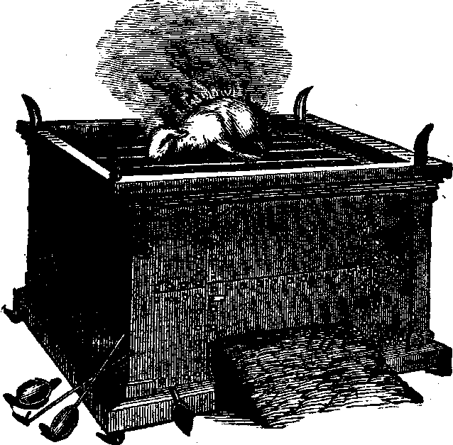
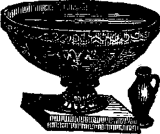
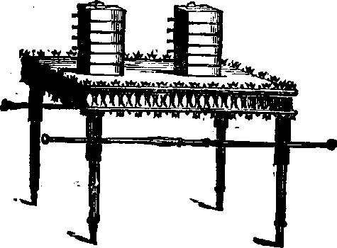
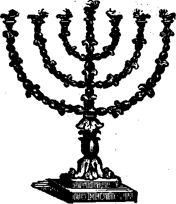
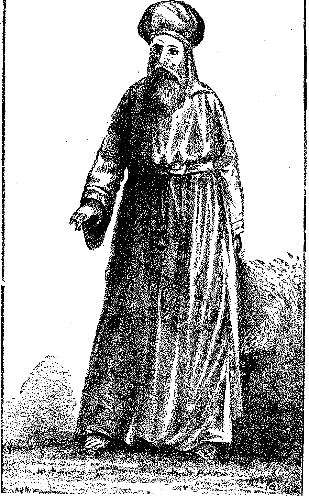
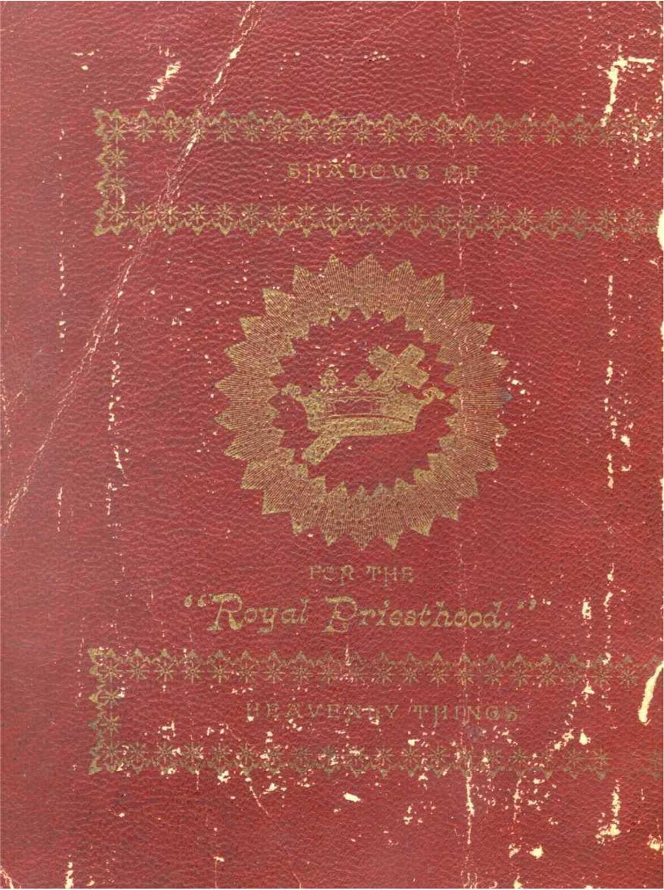

i

ass
J
MS
feS
ISTo. 11.-OCTOBER, 1891.
Entered at Allegheny P. O. as second-class mail matter.
OLD THEOLOGY TRACTS FOR THE PROMOTION OF CHRISTIAN KNOWLEDGE.
One Cent Each—32 Pages. Sample Copy Free.
No. 1. Do the Scriptures Teach that Eternal Torment is the Wages of Sin ?
No. 2. Calamities— Why God Permits Them.
No. 3. Protestants, Awake/ How Priestcraft now Operates.
No. 4. Dr. Talmage's View of the Millennium.
No. 5. Bible Study and Students' Helps.
No. 6. The Hope of the Groaning Creation.
No. 7. The Wonderful Story—The Old, Old Story.
We especially commend, both to honest skeptics and to saints, “The Plan of the Ages.” No othertbook of its size, known to us, so fully unfolds the divine plan revealed in the Scriptures. It is a veritable “Bible Key,” and is well described as “A Helping Hand for Bible Students.” We can supply it by mail, cloth bound, for $1, or in paper covers for 25 cents; or we will loan it to the poor, who will promise a careful reading and to pay return postage.
We supply a large line of Bibles with and without Teachers’ Helps, at or below wholesale prices. Send for descriptive Price List, free.
ADDRESS ORDERS TO
“ BIBLE HOUSE ”—ARCH ST.,
ALLEGHENY, PA., U. S. A

i
ass
J
MS
feS
. t O ‘
WWW
2“‘ ...... ’ - ;■•■ 71 t
’■■-'■"■ ■ -ri*-
<.&■
,i'v"
THE TABERNACLE IN THE WILDERNESS
.....>
:a *.• "■’
' -+ ■’'L,XS
THE
OF THE
DEDICATED
---TO---
*F]4E peYAIx ^plESTfd©©O.
PUBLISHED BY THE Tower tiible & Tract Society, “bible house/* arch st., ALLEGHENY,PA.

TABERNACLE SHADOWS
OF BETTER SACRIFICES.
The Tabernacle which God commanded the people of Israel to construct in the Wilderness of Sin, in connection with which all their religious services and ceremonies were instituted, was, the Apostle Paul assures us, a shadow of good things to come. (Heb. 8 :5 ; 10■:1; Col. 2 :17.) In fact the whole nation of Israel, with its laws and its religious services and ceremonies, was typical. This being true, our understanding of the plan and work of salvation now in progress, as well as their future development, cannot fail to be greatly enlightened by a careful study of that Jewish shadow which they, for our edification, were caused to repeat year by year continually until the Gospel age.—1 Pet. 1:12.
It is not simply to gain a historical knowledge of the Jewish forms, ceremonies and worship that we come to the investigation of this subject, but that we may be edified by understanding the substance from an examination of the shadow—as God designed in arranging it.
We will fail to attach sufficient weight and importance to the shadow, unless we realize how carefully God .guided and directed all of its details: First, he took W®ses up into the mount and gave him an illustration of the manner in which things were to be made ;
Secondly, he charged him to be careful of every particular—“See, saith he, that thou make all things according to the pattern shewed to thee in the mount. ’ ’ (Heb. 8:5; Exod. 25:40.) So, too, with all the minutiae of the service: every jot and tittle had to be exactly performed in the type, because it illustrated something greater and more important to come afterward. And in order that these shadows might all be exactly performed, and that the people might not become careless, the usual penalty for any violation was death. For instance—Exod. 28 :43; Num. 4:15, 20; 17:1352 Sam. 6:6, 7; Lev. 10:1, 2.
Realizing God’s care in making the “ shadow” should not only give us confidence’ in its correctness, that not one jot or tittle of it shall fail until all be fulfilled (Matt. 5 :18), but it should also awaken in us so great an interest in God’s plan as would lead us to examine closely, and search carefully, for the meaning of those shadows. And this, with God’s promised blessing, we now propose to do, assured that among those who are truly God’s consecrated ones—children begotten of the Spirit—“he that seeketh findeth; and to him that knocketh, it shall be opened. ”
The directions given to Moses for the construction of the Tabernacle may be found in Exod. 25 to 27, and the account of the performance of the work, in Exod. 35 to 40. Briefly stated, the Tabernacle was a house const* acted of a series of boards of shittim wood, ‘ ‘ overlaid” or plated with gold, set on end into sockets of silver, and firmly fastened together by bars of the same wood, also covered with gold.
This structure was 15 feet wide, 15 feet high, and 45 feet long, and open at the front or east end. It was covered by a large white linen cloth, interwoven with figures of cherubim, in blue, purple and scarlet colors. The open end-, or front of the structure, was closed by a curtain of similar material to the covering cloth, called the “Door,” or first vail. Another cloth of the same material, similarly woven with figures of cherubipi, called the “Vail” (or second vail), was hung so that it divided the Tabernacle into two apartments. The first or larger apartment, 15 feet wide and 30 feet long, was called the “ Holy.”1 The second or rear apartment, 15 feet wide and 15 feet long, was called the “ Most Holy.” These two apartments constituted the Tabernacle proper; and a tent was erected over them for shelter. It was made of a covering of cashmere cloth or goat’s hair, another of rams’ skins dyed red, and another of seals’ skins (mistranslated badgers’ skins).
The Tabernacle was surrounded by a yard or ‘ ‘Court, ’ ’ toward the rear of which it stood. This court, 75 feet wide and 150 feet long, was formed by a fence of linen curtains, suspended from silver hooks, set in the tops of wooden posts 7 J feet high, which were set in heavy sockets of copper (mistranslated brass), and braced, like the tent which covered the Tabernacle, with cords and pins. This enclosure was all holy ground, and was therefore called the ‘ ‘ Holy Place’ ’—also the ‘ ‘ Court of the Tabernacle. ’ ’ Its opening, like the door of the Tabernacle, was toward the east, and was called the “Gate.” This “Gate” was of white linen, interwoven with blue, purple and scarlet. It will be noticed that the three entrance passages, viz. : the “Gate” into the “Court,” the “Door” into the “Holy,” and the “Vail” into the “Most Holy,” were of the same material and colors.
THE BRAZEN ALTAR.
Outside the Tabernacle and its “Court” was the “Camp” of Israel, surrounding it on all sides at a respectful distance.
The furniture of the ‘ ‘ Court ’ ’ consisted of but two pieces : the “Brazen Altar” and the “Laver.”
Just inside the gate, and immediately in front of it, stood the ‘ ‘ Brazen Altar. ’ ’ This altar was made of wood and covered with copper, and was 7 J feet square and 4 j feet high. Various utensils belonged to its service—fire pans (called censers), for carrying the fire to the “Incense Altar; ’ ’ basins to receive the blood ; flesh hooks, shovels, etc.
THE LAVER.
Next, between the ‘ ‘ Brazen Altar ’ ’ and the door of the Tabernacle, was the ‘ ‘ Laver. ’ ’ It was made of polished copper, and was a receptacle for water, so the priests could wash before entering the Tabernacle.
-The furniture of the Tabernacle consisted of a “Table,” a “Candlestick” and an “Incense Altar” in the “Holy,” and the “Ark of the Testimony” in the “Most Holy.” *
Within the Tabernacle, in the first apartment, the ‘ ‘ Holy, ’ ’ on^the right (north), stood the Table of ‘ ‘ Shew-bread ’ ’—a wooden table overlaid with gold; and upon it
THE TABLE OF SHEW-BREAD.
were placed twelve cakes of unleavened bread in two piles, with frankincense on top of each pile. (Lev. 24 • 6, 7.) This bread was proper for only the priests to eat: it was holy, and was renewed on the seventh or Sabbath day.
THE GOLDEN CANDLESTICK.
Opposite the ‘ ‘ Table of Shew-bread ’ ’ stood the ‘ ‘ Candlestick,” made of pure gold, beaten work (hammered out), having seven branches, and in each branch a lamp. It was the only light in the “Holyfor, as we have seen, the natural light was obscured by the walls and curtains, and there were no windows.
Tur;
THE
‘ ‘ INCENSE ALTAR. ”
‘ ‘ GOLDEN altar.”
Further on, close up to the “Vail,” stood a small altar of wood covered with gold, called the “Golden Altar, ” or “ Incense Altar. ’ ’ It had no fire upon it except when the priests brought it in the censers, which they set in the top of this ‘ ‘ Golden Altar, ’ ’ and then crumbled the incense upon it, giving forth fragrant perfume.
THE ARK OF THE TESTIMONY.
Beyond the “Vail,” in the “Most Holy,” there was but one piece of furniture—the “ Ark.” It was a rectangular box made of wood overlaid with gold, having a lid or cover of pure gold called the Propitiatory, or “Mercy Seat.” Upon it (and of the same piece) were two cherubs of gold—beaten work. Within this ‘ ‘Ark ’ ’ (under the Propitiatory) were placed the golden bowl of manna, Aaron’s rod that budded and the two tables of the Law. (Heb. 9:4.) Upon the Propitiatory a Supernatural light appeared, shining out between the cherubim, representing the divine presence; This was the only light in the “Most Holy.”
It is noticeable that everything inside the Tabernacle was of gold, while in the * ‘ Court ’ ’ everything was of copper Wood, which was the basis covered with these metals, was used, we believe, to make the articles of lighter weight-than if of solid metal. ' This was an important consideration when they traveled. The vessels of the Temple, representative of the same things, were of solid metals. (1 Kings 7:47-50.) These two metals, gold and copper, were used, we .think, to represent two different natures — copper representing the human nature in its perfection; and gold representing the divine nature—much alike in their appearance, yet different in quality, as the human nature is an image of the divine.
It will be noticed that the arrangement of the
CAMP, COURT AND TABERNACLE
formed three general divisions. The “ Camp" repre-- sented the condition of the world of mankind, in sin.
typified by the nation of Israel. These were separated from all holy things by the curtain of white linen, which, to those within, represented a wall of faith, but to those without, a wall of unbelief which hindered their view of. and access to, the holy things within. The only way to enter the “Holy Place” or “ Court” was through the “Gate”—Jesus. “ I am the way. . . . No man cometh unto the Father but by me. ” “I am the door. ’ ’ —John 14 :6; 10 19.
The ‘ ‘ Court ’ ’ represented the condition of Justification, entered through faith in Christ, the “Gate.” Into this * ‘ Court ’ ’ only Levites (typical of justified believers} were allowed to come. These had access to the “Brazen Altar” and the “Laver,” and did service in the “ Court;” but had no right as Levites (believers) to go into the Tabernacle; no, nor even to look into it. (Num. 4 : 19, 20.) In the “Court” all things were of copper, to indicate that the only class admitted there was justified men.
The “Tabernacle" represented the condition of all who undergo a change of nature from human to divine. That is, it represented the conditions of those who (as Levites—justified believers) have consecrated their human nature to death, and have become partakers of the divine nature, by being begotten of the Spirit ; and who, after having completed their consecration in death, will be fully changed in the Resurrection birth to the divine pafure and organism. No human being, be he ever so full of faith, be he washed from every sin, and in God’s sight justified freely from all things, reckoned perfect, can have any place or privilege in divine things unless he fully consecrate or sacrifice himself. He cannot even look into spiritual things, in the sense of appreciating them. ‘ ‘ The natural man receiveth not the things of the Spirit, . . . neither can he know them, because they are spiritually discerned.”—i Cor. 2 :14, 12.
All things in the Tabernacle were oi gold, which represented the divine nature. Only those of the Levites who were consecrated to the work of sacrifice (the Priests) had access to the Tabernacle; so only those of the household of faith who are consecrated to sacrifice, even unto death, enter the divine conditions represented in the Tabernacle.
The “Court” or justified human condition is entered by faith only ; but while we must retain the faith that justifies, we must do more, if we would experience a change of nature and become “new creatures,” “partakers of the divine nature.” If we would enter the Tabernacle or divine condition, we must crucify the justified flesh, presenting our human wills and bodies living sacrifices to pod ; no longer to seek human pleasure, honor, praise, etc., but to be dead to these and alive to the heavenly impulses. Yet into this condition, also, we come through Christ Jesus our Lord, who not only opened for us the “Gate” of justification through faith in his blood, but who also opened the ‘1 Door’ ’ into the Tabernacle, “ a new ” way of life, as spirit beings, through and beyond the vail, by the sacrifice; of the justified flesh.
The two apartments of the Tabernacle, the “Holy” and the “Most Holy,” represented two phases or stages of the divine life. The “Holy" represented the present condition of those begotten of God through the Word. These, as divine minded “new creatures,” though still “in the flesh,” have their real life and walk with God, within the vail and beyond the sight of the world and the unconsecrated believers. These enjoy the light of the candlestick, eat of the special food, and offer incense at the golden altar, acceptable through Christ Jesus.
The “Most Holy" represented the perfected condition of these new creatures, when born from the dead in the resurrection. Then, beyond bofh vails—the fleshly mind and the fleshly body—they will possess glorious spiritual bodies, as well as be spiritual-minded. They will be like their Leader, and Forerunner beyond the vail, who, having entered, hath consecrated for us this new and living way.
The spiritual-minded creature in the “Holy” by faith looks forward through the rent “Vail” into the “Most Holy,” catching glimpses of the glory, honor and immortality beyond the flesh ; which hope is an anchor entering into that beyond the vail.—Heb. 6:19; 10:20.
We see, then, that justification by faith brings us into a condition of peace with God. When our sins are forgiven, we are a step nearer to God, but still human—in the “Court. ” If we would attain the prize of our high calling, which is of God in Christ Jesus, and enter through the “Holy” into the “Most Holy,” we must; follow
IN THE FOOTSTEPS OF JESUS, our Leader and Head—“the High Priest of our profes-
sion." By faith in his ransom we have entered the “ Gate” to the “ Court ’’—the vail of unbelief and sin is passed. By renouncing our human will, and all our human aspirations and hopes, we have passed the first vail, or vail of human-mindedness, counting our human will as dead; henceforth consulting not it, but the will of God only. We now find ourselves as ‘ ‘ new creatures'' in the ‘‘Holy”—in the first of the “Heavenlies ” or Holies (Eph. 2 :6.—Diaglotty, and here we are enlightened by the “Golden Candlestick” (God’s Word), refreshed and strengthened daily with the truth, as represented in the ‘ ‘ Shew-bread, ’ ’ lawful for only the Priests to eat. (Matt. 12:4.) And thus enlightened and strengthened, we should daily offer up sacrifices at the “Golden Altar,” acceptable to God through Jesus Christ—a sweet perfume to our Father.—1 Pet. 2 :5.2
Thus all the saints, the consecrated, are in a “heavenly” or “ holy” condition now—“seated (at rest and communion) with Christ in (the first of these) heavenly places, ’ ’ but not yet in the ‘ ‘holiest of all. ” No, another vail must first be passed. As the passing of the preceding vail represented the death of the human will, so the passing of the second vail represented the death of the .human body ; and it requires both to complete our sacrifice. Both fleshly mind and fleshly body must first be passed before we can be in the "holiest of all”— perfected as . partakers of the divine nature and its spirit conditions.
With these thoughts as to the three conditions represented by these three places—“Camp,” “Court” and “Tabernacle”—let us notice particularly the three classes which come under these conditions, viz.: the Unbelieving World, Justified Believers and the Saints or Consecrated Believers, typified respectively by
ISRAELITES, LEVITES AND THE PRIESTHOOD.
In understanding the significance of the Tabernacle service, it is necessary to get a clear idea not only of the structure, its furniture and their typical signification, but also of the actors therein, and their significance as types.
Israel is used in many instances to typify the Christian Church. For instance, when they left Egyptian bondage, they were a type of God’s children who hear his call to come out from the world and engage in his worship.
The wilderness journey represented the tedious pilgrimage through which many pass, seeking the promised Canaan rest—“Come unto me, and I will give you rest.” As in the type, so in reality, the promised Canaan of rest is not far off, if God’s children had faith enough to go up and enter in. God has made abundant provision for them; yet they journey throughcthe wilderness of sin, seeking rest but finding none,;because they lack faith in God’s promises. Some wander thus a long time ; and some never enter the Canaan rest because of unbelief. But while Israel, according to the ffiesh, is thus and in other ways used to typify spiritual HSrael, yet, as we are now examining it, in its relation to the Tabernacle, it is a totally different type. Here Israel unquestionably typified the whole world of mankind. The sin-offerings, sacrifices, atonement, etc., made typically for them (and them only), were typical of the “better sacrifices” and atonement, made on behalf of the whole world ; for “ He is a propitiation for our sins, and not for ours only, but also for the sins of the whole world.”-—i John 2:2; Heb. 9 :23.
In a word, Israel, as well as the Tabernacle, Priests, Levites and sacrifices, was a type. And what was there done in symbol with and for Israel is, since the first advent of Christ, being carried out on a higher plane, and on a larger scale; the latter being the realjty, of which that was the type or shadow.
As Israel typified the world, so the tribe of Levites typified the “household of faith,” or all believers in Jesus and his ransom. The Priesthood, one body under one chief or High Priest, was typical of the “little flock,” who, with their “Head ” or High Priest, are to be Kings and Priests to reign on the earth. (Rev. 5: 10.) Thus viewed, we see Jesus the High Priest not of the Aaronic order, which was but the type of a greater and grander profession or order, but the Head of the real Priesthood of which others were but figures.—Heb. 3:1; 4:i4-
But before the under-priests, the members of the body of Christ, the priesthood, will be united to their Head, and begin their reign, they must first “ suffer with him " in making the sacrifices, as we shall shortly see.—2 Tim. 2:12.
The Apostle Peter shows who were typified by the priests, when, addressing those who are sanctified, he says (1 Pet. 1:2 ; 2 :5, 9): “ Ye are . , ... . an
holy priesthood to offer up sacrifices acceptable to God by Jesus Christ.’’ “ Ye are ... a royal priesthood.” They are all ministers (servants') of the Truth, though not all preachers and Doctors of Divinity.
That the head or chief priest of this priesthood, this “little flock,” is our Lord Jesus, is repeatedly mentioned by the apostles. We give but one quotation: “Holy brethren [“theRoyal Priesthood”], partakers of the heavenly calling, consider the apostle and High Priest of our profession [or order of priests, to be], Christ Jesus.”—Heb. 3:1.
As we now pass to the consideration of the inauguration of the typical priesthood, we notice that the tribe of the Levites (typical of all the justified believers) existed before the Priesthood was instituted. So in the antitype, the “Royal Priesthood" began with the anointing of Jesus, the High Priest (at baptism, Luke 3:22; Acts 10:38); but believers, justified by faith in Christ, had lived long before that. For instance, Abraham believed God, and was justified by his faith. (Rom. 4: 2, 3.) _ Though even the type had not yet come in his day, yet Abraham, as a justified believer, was a member of the “household of faith,” typified by the Levites. But none of the “Royal Priesthood ” were selected until after the Chief or High Priest of this order was first initiated and installed in office. Since then the initiation and installment of the under-priests has been the special work of this Christian dispensation. Thus the priests now being installed and now sacrificing are being prepared as God’s instruments for the blessing of all the families of the earth.
THE PRIESTHOOD.
THEIR TYPICAL CLOTHING, ANOINTING AND CONSECRATION.
In this ceremony, as in every other relating to the ordination and work of the priesthood, it will be well to notice that Jesus was the first—the Leader, Captain, Forerunner—teaching clearly that none preceded him, hence that none of the patriarchs or prophets are of the ‘ ‘ little flock, ’ ’ the ‘ ‘ Royal Priesthood, ’ ’ otherwise called “the Bride} the Lamb’s wife.’’ Though they will be greatly blessed as the Lord’s servants, their service will not be so grandly high as that of the priests, nor their honor so great; yet, as represented in the Levites, their future work and honor are to be great.
• “The narrow way to life’’ (immortality) was not opened up until Jesus came. He was the first to walk in it. He ‘ ‘ brought life and immortality to light. ’ ’ (2 Tim. 1:10.) And though all believers (Levites) will become possessors of everlasting life, and the world (represented in the “ Camp ” of Israel), also, if they will accept it during the Millennial age, yet only the Priesthood, who overcome and follow their Leader jn the narrow way to life—sacrificing human interests—thus seeking glory, honor and immortality, will ever become the possessors of that unlimited degree of life called . immortality , originally possessed only by Jehovah God and since his resurrection by our Lord Jesus Christ. (See “The Plan of the Ages,”” Chapters X. and XI.)
Under the Law, the anointing was the ceremony by which the priests were installed in God’s service. They were anointed to their office with a peculiar ointment, called the “Holy Anointing Oil,” used upon none but the Priests, and unlawful for any one else to have or to make. (Exod. 30:25-33.) This oil typified the Holy Spirit of adoption whereby we, the real “Royal Priesthood,” are sealed. Only the consecrated ones are ever to be thus anointed. Aaron, the typical High Priest, represented Jesus, the Head, and the Church as members of the b°dy, of the great High Priest. Being but a sinful man like others, he had to be washed in order fitly to represent the purity of the antitype.
'’Aaron was then clothed with the holy garments of “glory and beauty ” (Exod. 28), and lastly the anointing oil was poured on his head. Each article of this glorious apparel was typical of qualities and powers of the Great Deliverer—Head and body—as Jehovah discerned them, looking down into the future to the time for “the manifestation of the Sons of God,” and the fulfilment in them of his promises.
THE HIGH PRIEST IN GARMENTS OF TYPICAL “GLORY AND BEAUTY.”
“And these are the garments—a breastplate, and an ephod, and an upper robe, and a broidered coat, a mitre and a girdle. ’ ’—Exod. 28 : 4.
The white linen “coat” represented the High Priest’s purity, while its embroidery showed the outgrowth of that pure character in works. The “mitre,” a strip of fine white linen (typical of righteousness), worn around the forehead, to which the golden plate, or “crown,” was fastened with a blue lacer, showed that the crown was righteously his. Upon the golden plate was inscribed “Holiness to the Lord,” thus proclaiming: This High Priest is entirely devoted to the accomplishment of Jehovah’s purposes. The golden crown proclaimed his royalty. Christ is to be “a priest upon his throne”—“ a priest forever after the order of Melchize-dek.” (Zech. 6:13 ; Ps.no :<.) The linen “girdle” indicated a righteous servant: linen—righteousness; girdle—servitude.
The ‘ ‘ upper robe, ” of blue, represented his faithfulness. The fringe of it was made of golden bells and pomegranates. The pomegranate, being a choice fruit, showed that the faithful performance of the Redeemer’s work of sacrifice had borne rich fruit—the redemption of the forfeited life of the human race. The golden bells signified that when our High Priest appears in glory and beauty, the fruit of sacrificial work will be made manifest to all—proclaimed to all the world, as in the type the bells proclaimed it to all Israel. This is indicated by the close proximity : the bells drawing attention to the fruit.
The “ephod” was made of a cloth of purple, blue, scarlet, white and gold threads, skilfully and beautifully interwoven. It was of two parts, one hanging in front and the other over the back. These two parts were fastened together by tyro gold clasps which rested on the shoulders. This ephod typified the two great
THE HIGH PRIEST
IN ROBES TYPICAL OF CHRIST’S COMING GLORY.
covenants—the Abrahamic Covenant represented by the front part, and the New Covenant represented by the-back part, both of which are thus shown to be dependent on this High Priest. They are laid on him : if he fails to suppoit them, they fall to the ground. But, thank God, they are firmly clasped on him by the gold clasps (divine power), as well as bound to him by the ‘ ‘ curious girdle ’ ’—a cord made of the same materials as the ephod. This girdle seems to say, This is a servant; and as this is the girdle of the ephod it tells us that this one is “The Messenger (servant) of the Covenant whom ye delight in.”—Mal. 3:1.
That part of the Abrahamic Covenant referring to the spiritual seed is represented as complete in God’s sight, the person of the High Priest representing the complete spiritual seed as it will be clothed with honor and power at the beginning of the Millennium. Yet the Abrahamic Covenant is partially fulfilled in the person of the High Priest, who is the Seed, the spiritual seed, which is to bless all. But, as we have seen, this covenant has two phases, the heavenly, or spiritual, and the-earthly, or fleshly—the literal descendants of Abraham.-The latter was the only one recognized by Abraham, the spiritual being hid until God’s due time to reveal it. During the Gospel age the spiritual seed develops, by the members of the body of the High Priest growing up into the Head. After this spiritual seed has been developed, then that phase of the covenant understood by Abraham and all his descendants to this day will be fulfilled. And its fulfilment hangs on the great spiritual High Priest, too. So says Paul: ‘ ‘As concerning the Gospel [the spiritual part of the covenant] they [the literal seed] are enemies for your sakes ; but as touching the election they are [still] beloved for the fathers’ sakes. For the gifts and callings of God are not things he will repent of. For this is my covenant to them. There shall come out of Zion [the spiritual Church] the deliverer [this great High Priest, the servant of the Covenant—Jesus, the Head, and the “little flock,” his body], and shall turn away ungodliness from Jacob.”—Rom. n : 26-29.
So, then, after the body of Christ completes the spiritual “seed,” the Abrahamic Covenant must have a fulfilment to the fleshly seed: that fleshly seed must become great “as the sand by the sea shore,” as the heavenly Seed is likened to “the stars of heaven,” (Gen. 22 :17.) They must first be turned to righteousness and truth; and they will then become an agency through which the spiritual seed will operate, to bless all mankind with truth and knowledge.
Thus the earthly phase of the Abrahamic Covenant is seen still to depend on and to be upheld by the great High Priest, who is also the mediator of the New Covenant which Jesus sealed or ratified with his own blood, in which sacrifice the members of his body have been privileged to join ; and they will also be privileged to share with him in conferring upon mankind the blessings of that New Covenant, when the day of sacrifice is ended and the reign of glory begins. (Jer. 31: 31; Ezek. 11:19; 36:24-28; Rom. 11:27.) This New Covenant, as before stated, is typified by the back part of the ephod.
The scarlet, blue, purple, etc., which composed the ephod, indicated the conditions of the covenant: the scarlet showed how God provides redemption from the Adamic curse through the blood of the ransom; the white linen indicated the restoration of man to his original purity; the blue vouchsafed to him the ability faithfully to maintain his righteous character; the purple proclaimed the restoration of the royalty of earth as possessed by Adam, earth’s first monarch. All of these blessings woven together are made sure by the divine power of the anointed Priest, as shown by the interwoven thread of gold. Thus Jehovah has laid l>oth of these covenants, as they relate to men, upon one who is both mighty and willing to execute these glorious covenanted blessings— ‘ ‘ in due time. ’ ’
The “breastplate of judgment’’ was placed on the front of the ephod. It was suspended by a gold chain from the clasps on the shoulder, and was fastened to the ephod by a lacer, through golden rings—this fastening being so concealed underneath that to the casual observer it might appear to be a part of the ephod. (Exod. 28: 26-28.) This breastplate beautifully represented the Law : It was not a part of the Abrahamic covenant (ephod) but “it was added ’’ to it. (Gal. 3 :19.) As the Israelite regarded them (not seeing the hidden connection), the.covenant to Abraham and “the law, which was 430 years after, ’ ’ were all one. But Paul shows us that there are two parts—two seeds—to this covenant, the spiritual and the natural; and that the covenant and the law were distinct, “to the end that the promise might be sure to all the seed ; not to that only which is of the Law, but to that also which is of the Faith."— Rom. 4:16.
This Law emblem (the breastplate) was one of the most beautiful of the High Priest’s garments. It was made of the same materials as the ephod. It had in it, -set in gold, twelve precious jewels, in which were engraved the names of the twelve tribes. It was bound on his heart, indicating that it was precious to him. Asa “breastplate of righteousness” it covered him. That which condemned all imperfect ones was his pleasure—“ I delight to do thy will, 0 my God; yea, thy law is within my heart. ”—Psa. 40:8.
The breastplate was two spans long and one wide, folded in the middle, i. e., a span long and a span wide when doubled. The size, a span, indicated that the law of God is the full measure of a perfect man's ability. Jesus, being perfect, was the only one who ever kept it fully, while those who compose the “ little flock,” his body, have his righteousness imputed to them.
Its being double, of the same size and measure, represented the letter and the spirit of the law. The front part contained the jewels, and was hung by the gold •chain to the gold clasps of the ephod. The under part was fastened to the ephod. This latter, tied to the ephod (covenant), seems to represent the law in letter ;as presented to fleshly Israel. The front part seems to illustrate the spirit of the law fulfilled in us, “who walk not after the flesh, but after the spirit.” (Rom. 8: 4.) The two are really one when rightly seen, yet the -front part, only, bears the precious jewels.
Pure gold being a symbol of divine things, the dependence of this part of the Law by a gold chain, from the gold clasps, seems to teach that the Law is divine; and we know that it is by divine strength that we walk not after the flesh but after the spirit. It is this phase of the Law which bears the “jewels,” set in gold, representative of the true Israel, the Lord’s “little flock.” “They shall be mine, saith the Lord of hosts, in that day when I make up my jewels.” (Mal. 3 :17.) Thus embedded in gold (the divine nature) and upheld by the golden chain of divine promises, what wonder that “ the righteousness of the law is fulfilled in us !”
As Aaron stood there clothed in those beautiful robes so typically significant, and anointed with the holy oil, his head represented Jesus, the Head of the Priesthood, and his body represented the Church complete in Christ. How impressive and significant a type of the world’s High Priest, undefiled, and clothed with power and authority to fulfill Jehovah’s covenants !
We see the body, or members of the High Priest, again individually typified by the under-priests, who wore bonnets covering their own heads, to indicate that they were not the head of the Priesthood, but members of the body. God gave Jesus “to be the head over all things to the Church, which is his body. ’ (Eph. 1:22-23.) It is for this reason that Paul insists that a woman’s head should be covered, as indicating that she is not the head, the husband and wife being typical of Jesus and his Bride—the Church of the First-born. These under-priests were robed in linen garments and wore girdles. Their robes represented the imputed righteousness of Jesus, and their girdles showed that they also were servants of righteousness.
As Aaron had the holy oil poured upon his head, so our Head, the Lord Jesus, was anointed with the antitypical oil—the Holy Spirit—when he was thirty years of age, on the banks of Jordan, at the time of his consecration. There he was “anointed with the oil of gladness above his fellows ”—as head over all his jointheirs. A measure of the spirit is given to every member who thus consecrates; but Jehovah gave “ not the Spirit by measure unto him.’’ (John 3 : 34.) John saw and bore record that our High Priest was thus anointed (John 1:32; Luke 4:1), and Peter adds his testimony (Adis 10: 38), “ How God anointed Jesus of Nazareth with the Holy Spirit and with power.”
The anointing oil was poured only upon the head. The under-priests were not anointed individually. Since they were recognized as members of the High Priest’s body, they received their anointing through him as their head. Hence only those who are in Christ Jesus are partakers of the anointing which seals all those who will be recognized as the heirs of God’s promises, and joint-heirs with Jesus Christ their Lord.
The oil “ ran down . . . to the skirts of his garments” (Psa. 133:2), thus representing how all the members of Christ’s body are to be partakers of the same anointing after their Head. ‘ ‘ The anointing which ye have received of him abideth in you.” (1 John 2 : 27.) This oil began to reach the body on the day of Pentecost, and flows on down through this Gospel age, anointing all who are truly baptized into Christ, con-
stituting them, with their Head, kings and priests unto God, to reign a thousand years,—Rev. 20 :6.
We thus see that Aaron, robed and anointed, represented the entire Christ—“the seed” in which God is about to bless all the families of the earth. But let us not .forget that we have been viewing the Great Deliverer from God’s standpoint, and with him looking down to the time of his manifestation—the dawn of the Millennial Day—when all the members have come into the body, and when the “holy oil” has run down “to the skirts of his garments,” anointing every member. Then he will begin the work of blessing mankind. For the glorious reign of this Kingly Priest, we constantly pray—‘ ‘ Thy Kingdom come, thy will be done on earth.”
CONSECRATING THE PRIESTHOOD.
Leviticus 8: 14-33.
The consecration of the Priesthood was typical of the consecration of the human nature of the Lord Jesus and his body, the Church, to the will of Jehovah—the obedience of Jesus even unto death , and the obedience of the members of his body suffering the same with him. The whole body, represented by Aaron’s sons, as well as the Head, represented personally by Aaron himself, are, by the antitypical sacrifices being made during the Gospel age, consecrated for their future work as kings and priests, to restore and rule over and bless mankind. When this consecration is made, they have given their all. But their extremity is Jehovah’s opportunity; and when they have consecrated all they have to dest ruction, and become joint-sacrificers with Jesus, their Redeemer, they are begotten of God to a new nature— the spiritual; and not only so, but to the highest order of spiritual existence—the divine nature; and as such they are owned as spiritual sons of God.—Gal. 4:4, 7 ;
2 Pet. 1 :4.
This type showed these two natures : the new or divine nature was represented in Aaron and his sons, while the human nature was represented by a bullock. The bullock for the sin offering was brought, “and Aaron and his sons laid their hands upon the head” of it, thus saying, This sacrifice represents us. From that moment, all that happened to the bullock represented what was to be done to Jesus and to his body, the Church, as human beings. The bullock was delivered up to the “Law” (represented by Moses), to meet its demands against Israel, typical of mankind in general. To meet the demands of the law, it had to be slain—‘ ‘And Moses slew it. ’ ’ He then applied the blood to the horns of the altar. The ‘ ‘ finger ’ ’ of the ‘‘Law ’ ’ thus pointed out that the altar of earthly sacrifices was acceptable to God by reason of the shed blood (the life given), and that all who realize the power of the altar (horns are symbols of power) must first recognize the blood which sanctified it. The blood poured at the base of the altar showed that through the blood of the sacrifice (life given) even the earth was purchased back from the curse. See Eph. 1:14: “Unto the redemption of the purchased possession.”
And Moses took the bullock, his hide, flesh, etc., and burnt them with fire without the “ Camp.” (Verse 17.)
Thus the humanity of the Christ complete—Head and body—is made ‘ ‘ a sin-offering, ’ ’ suffering the destruction to which the world was doomed, and from which, by this sacrifice, it will ultimately be delivered. But while their humanity is destroyed, as a vile thing in the eyes of the world, as represented by the burning of the bullock without, the ‘ ‘ Camp, ’ ’ God accepts the heart devotion which prompts the sacrifice, which says : ‘ ‘ Lo, I come to do thy will, O God“I delight to do thy will, O my God. ’ ’ This was represented by the offering on the altar of the fat and parts of the inward life-producing organism, as a “sweet savor” unto the Lord.
Other features of the same consecration were shown by the two rams mentioned in verses 18 and 22. The first mentioned was the ram for the burnt-offering. Aaron and his sons laid their hands upon its head, thus indicating that it represented them. It was killed ; its blood was sprinkled upon the altar ; and Moses ‘ ‘ cut the ram into pieces, and washed the inwards and legs in water, ’ ’ and ‘ ‘ burnt the head and the pieces, and the fat.” Thus during the entire Gospel age Jesus and his body, the Church, are being presented before God on the altar. The Head was laid there first, and since then all who are “dead with him,” and cleansed, as in the type, by the washing of water—through the Word— have been laid with it. Its burning on the altar showed how God accepts this sacrifice. It is “a sweet-smelling savor. ”
The second ram, “the ram of consecration,” showed what effect the sacrifice will have upon us, as the first showed how God received it. Aaron and his sons laid their hands upon its head—it represented them. And Moses slew it and took its blood (consecrated life) and put it upon each separately, thus showing that our consecration is an individual work. And he put it upon the tip of the right ear, and upon the thumb of the right hand, and upon the great toe of the right foot. Thus by our consecration we are enabled to have the “hearing of faith," and to appreciate God’s promises as none but the consecrated can. Our hands are consecrated, so that whatsoever our hands find to do we do it with our might as unto the Lord. Our feet are consecrated, so that henceforth we “ walk not as other Gentiles,” but “walk in newness of life,” “ walkXty faith,” “walk in the spirit,” “walk in the light,” and even “ as we received Christ, so walk in him.”—Verses 23, 24.
The choice portions of the ram, its “ inwards,” and “fat,” representing our best powers, were taken in the hands of the priests and waved—passed to and fro, before the Lord—representing the fact that a consecrated offering is not given to the Lord for a moment, a day or a year, but that continually we keep our affections and powers uplifted, never ceasing until accepted of him as having finished our course. And Moses took them off their hands, God’s acceptance being shown by fire. So we may not lay down Or cease to offer all our powers in God’s service while we have them, nor until all are consumed in his service. When the love (“fat”) of our inmost being is laid upon the altar, it helps to increase the fire of God’s acceptance. The more love there is connected with our consecration to God, the more quickly will it be accepted by him.
Upon this “wave-offering,” while in their hands, were laid three cakes from a basketful. This offering was laid by Moses upon the hands of both the High Priest and the under priests.
The first unleavened cake represented the actual purity of Jesus as a man, and the imputed purity of the Church as men, as attested by the Law (Moses). The second unleavened cake, mingled with oil, represented the indwelling spirit of God—sanctification. The third, a wafer, was mingled with honey, and represented our faith in the exceeding sweet and precious promises of glory7, honor and immortality.
Without these elements, it is impossible for our consecration to be complete, and hence acceptable, viz. : Justification (purity), Sanctification by the Spirit through the belief of the truth, and faith in the promised Glorification. This consecration has been in progress dur-v ing the entire Gospel age.
The anointing oil mingled with the blood of consecration was sprinkled over them (verse 30), showing that our consecration is accepted only because we are justified by the precious blood of our Redeemer. Thus we are told that we are accepted in the beloved—only.
The boiling of the flesh of consecration (verse 31) was iio part of the sacrifice : it was merely the preparing of the portion which they ate. It was all to be disposed bf (verse 32), showing how we are to be entirely conse-ij-grated and none of our time or powers wasted.
• The seven days of consecration (verses 33, 35) showed ‘gain that we are consecrated to God’s service, not for
part of our time only, but for all of it. Seven, in
Scripture, is a complete number, and signifies all, or the whole of whatever it applies to (“Seven Seals,” “Trumpets,” “Plagues,” etc.). Verse 36 shows the completion of the work of ■consecration.
There never was a time when it was more necessary than it is now, that all who are consecrated as priests should see to it that we “be dead with him,” and our every ability waved before God, that he may accept and make use of our talents to his glory. Especially is this a matter of interest to those who believe that very soon all the members of the body will be accepted with the Head, a sweet savor to God; and that the work of self-sacrifice being then finished, the glorious work of blessing men and fulfilling the Covenant of God will begin. And if we fail to be among the priests now, during the time of consecration, we cannot expedt to t>e of them when they begin their service for the people in the Kingdom, when these same priests (now despised of men but a “sweet savor to God”) will have the title of King added, and with their Head, Jesus, rule and bless all nations. (Rev. 20:6.) Do we earnestly desire to be among those who will sing to the praise of our great High Priest, ‘ ‘ Thou hast made us unto our God icings and Priests, and we shall reign on the earth?” If so, let us be fully consecrated now ; for it is only ‘ ‘ If we suffer with him ’ ’ that ‘ ‘ we shall also reign with him.”—2 Tim. 2:12.
THE GREAT ‘.‘DAY OF ATONEMENT.”
—Leviticus 16: 3-33.—
In considering these types we must, to appreciate them, remember that each is a picture, by itself, of one particular part of the work of the world’s High Priest; and so with the various ceremonies of the “Day of Atonement. ’ ’ To understand it clearly, we must realize that while our Lord Jesus is our (the Church’s) High Priest, yet in the more full and complete sense he is the Head, and we are the members of the body, of the world’s High Priest, just as Aaron was High Priest or chief of the under priests, while in a general sense the whole priesthood was one, designed to minister for Israel, who typified the world.
These Levitical pictures primarily referring to the Head, when fully considered, refer to the body as. well. For instance, the ceremony of anointing commenced with the Head, but the anointing applied to all the body during the entire Gospel age, as we have seen. As the consecrating of the priesthood includes all the members of the body, and requires all of the Gospel age to complete it, so also with the sin-offering, or the sacrifice of atonement: it commenced with the Head, and we, the members of his body, “fill up the measure of the sufferings of Christ which are behind.” And these sufferings require all of the Gospel age to complete them.
The ‘ ‘ Day of Atonement, ’ ’ which in the type was but a twenty-four hour day, we see then in the antitype to be the entire Gospel age. And with its close the sacrificing ceases, the glory and blessing commence, and the great High Priest of the world (Jesus and his bride, made one, Head and members complete) will stand forth crowned a King and Priest after the Melchizedek order: a King of Peace—a Priest upon his throne.
There he will stand before the world (manifest, recognized, but unseen by natural sight), not only as King and Priest, but also as the great Prophet—“A prophet shall the Lord your God raise up unto you of your brethren, like unto me [Moses] ; . . .. and it shall come to pass that every soul which will not hear that prophet shall be destroyed from among the people.” When, during the Millennium under the government and teaching of this great Prophet, Priest and King, mankind is brought to perfect knowledge and ability, perfect obedience will be required, and all who will not render it will be cut off from life, without further hope—the second death.—Acts 3 :22, 23.
In the end of the Jewish age, Jesus offered himself individually to Israel as prophet, priest and king, typical or illustrative of the whole body. As prophet, he taught them; as priest, “he offered up himself ” (Heb. 7 : 27); and as king, he rode into their city at the close of his ministry. But they did not receive him in any of these offices. During the Gospel age, his Church or body has acknowledged him as “a teacher sent from God”—the great Prophet; as the “High Priest of our profession;” and as the rightful King. The Word of
*
A PRIEST-IN LINEN GARMENTS.

God teaches, however, that it is not by the Church only that he is to be accepted, but that he (together with his body, the Church) will be the Prophet for the people, the Priest for all the people, and the King over all people, nations and tongues ; 1 ‘ Lord of all, ’ ’ Priest of all, and Prophet or teacher of all.
In the type of the Priests’ consecration, we saw Aaron and his sons representing our Lord Jesus and his body as ‘ ‘ new creatures, ’ ’ and a bullock representing their humanity ; but in the type now to be considered, we find Aaron alone representing the entire Anointed One (Head and body); and two different sacrifices, a bullock and a goat, are here used to represent the separateness, yet similarity in suffering, of the body and its Head, as the ‘ ‘ sin-offering. ’ ’ The bullock represented Jesus at the age of thirty years—the perfect man who gave himself and died on our behalf. The High Priest, as we have already seen, represented the ‘ ‘ new ’ ’ nature of Jesus, the anointed Head, and also all whom God foreknew, as members of his body. The distinction which is here made between the human and the ‘ ‘ new creature” should be clearly understood and remembered. (See Millennial Dawn, Vol. I., Chap. X., and Vol. II., page 126.) “The man Christ Jesus, whogave himself” at thirty years of age, was he who was previously • rich (of a higher nature), but»who for our sakes became poor ; that is, became a man, that he might give the only possible ransom for men—a perfect man’s life.— 1 Cor. 15: 21.
Since the penalty of man’s sin was death, it was necessary for the Lord Jesus to become a man, be ‘ ‘ made flesh, ’’or he could not redeem man. A man had sinned, and the penalty was death ; and if our Lord would pay the penalty, it was essential that he should be of the same nature (but undefiled, separate from sin), and die, else mankind could never be liberated from death. To do this, the man Jesus made sacrifice “of all that he had"—glory as a perfect man, honor as a perfect man could claim it, and, finally, life as a perfect man. And this was all that he had (except God’s promise of a new nature, and the hope which that promise generated); for he had exchanged his spiritual being or existence for the human, which he made “a sin-offering,” and which was typified by the bullock.
But since “the man Christ Jesus” gave himself as our ransom-price, it follows that he cannot be restored to manhood. If he were, we, the redeemed, would again come under the condemnation of death. But, thanks be to God, it remains a sacrifice forever, that we may be forever free from Adamic guilt and death. If, then, the Father would ever confer upon Jesus any honor, glory or life as a reward for his obedience even unto death, it must be a glory, honor and life on some other plane of .being than the human, so as not to interfere with our ransom-price.
Such was the promise of Jehovah to him, viz. : that he would highly exalt him above the human plane, and above his pre-human condition; above all angels, principalities and powers, to his own right hand (condition of chief favor, next to Jehovah), and make him a partaker of immortality—the divine nature. For these and other joys set before him, Jesus endured the cross, de-
• spising the shame, and is set down at the right hand of the Majesty on high.—Heb. 1:3.
The new nature which was received instead of the human, and as a reward for its sacrifice, is what is here typified by the Priest. While it is true that the sacrifice of the human was not finished until the cross, and that the divine nature was not fully received until the resurrection., three days later, yet, in God’s reckoning —and as shown in this type—the death of Jesus (the bullock) was complete when Jesus presented himself a living sacrifice at baptism. There he reckoned himself dead—dead to all human aims, or hopes of human glory, honor or life, in the same sense that we are exhorted to reckon ourselves dead indeed to the world, but alive as new creatures unto God.—Rom. 6:11.
This acceptance of Jesus by Jehovah at the time of his consecration, as though dead indeed, was indicated by the anointing with the Holy Spirit—the earnest or guaranty of what he would receive when death had actually taken place.
Thus considered, we see that the death of the bullock typified the offering by Jesus of himself, when he consecrated himself. This is in harmony with Paul’s statement, that when Jesus consecrated, saying—“Lo, I come [as in the volume of the Scriptures it is written of me] to do thy will, O God ”—-to die, and redeem many —there he took away the first [4 e. set aside the typical sacrifices] that he might establish [or fulfil] the real sacrifice for sin. (Heb. 10:7,. 9, 14.) Yes‘ there the slaying of the bullock occurred, and the three years of Jesus’ ministry showed that all human will was dead. and the body reckoned so, from the moment of consecration.
Jesus, the Anointed, filled with the Spirit, was the new, divine creature (though not perfected as divine— until the resurrection); and that relationship he always claimed, saying, The works that I do are not mine [as a man], but the Father that dwelleth in me, he doeth the works; the word which ye hear is not mine, but the Father’s which sent me. (John 14 :10, 24.) “ Not my will [as a man] but thine [Father—the divine] be done”, [in and to this earthen vessel consecrated to death].-—Mark 15:36.
When the bullock was slain (when Jesus consecrated), the work was done in the “Court,” which we have seen typified the plane of human perfection or justification, the condition of faith in and harmony with God, the highest attainment of the flesh. Jesus was in this condition, a perfect man, when he offered himself (the bullock in the type) to God.
.Bearing in mind these distinctions, let us examine carefully the work of the typical Atonement Day, that we may more clearly understand the reality. Aaron was washed, in order fitly to represent the sinlessness of the “new creature.” (“No one who has been begotten by God practices sin ; because his seed abides in him, and he cannot sin, because he has been begotten by God.”—1 John 3:9.—Diaglotti) The new nature cannot sin, and it keeps a constant watch over the old nature, reckoned dead, lest it come to life again. Aaron was clothed for the service of the ‘ ‘ Day of Atonement, ’ ’ not in his usual garments of glory and beauty, but in garments of sacrifice, with the “linen garments,” emblems of purity—the righteousness of saints. The robe of linen was an earnest of the glorious robe to follow ; the “linen girdle” represented him as a servant, though not so powerful as when, at the close of the “Day of Atonement,” he would be girdled with the “curious girdle” of the ephod; the mitre of linen, being the same as that belonging to the glorious apparel, proclaims his perfect righteousness now, as then.
So the High Priest, the divine-minded, spirit-begotten one, though not yet born of the Spirit, was ready and able to accomplish the sacrifice of the atonement, and proceeded to do it as typified in Aaron. “Thus shall Aaron come into the Holy [the Most Holy] with a young bullock for a sin-offering and a ram for a burnt offering. And Aaron shall offer his bullock of the sin-offering which is for [represents] himself, and make an atonement for himself [the members of his body—the under priests] and for his house [all believers, the entire “household of faith”—the Levites]. And he shall kill the bullock of the sin-offering, which is for [represents] himself. And he shall take a censer full of burning coals of fire from off the altar before the Lord, and his hands full of sweet incense beaten small [powdered], and bring it within the vail [the first vail or “ door ”]. And he shall put the incense upon the fire before the Lord [the censer of coals of ..fire was set into the top of -the golden altar in the ‘ ‘ Holy, ’ ’ and the incense crumbled over it, gradually, yielded a smoke of sweet perfume], that the cloud of the incense [penetrating beyond the second vail] may cover the mercy-seat, that is upon the testimony [or which covers the Law], that he die not.”—Verses 3, 6, 11-13.
Looking through the type to the antitype, let us now, step by step, compare the doings of Jesus with the prophetic picture. When Jesus had consecrated, he immediately took the sacrificed human life (blood of the bullock) to present it before God as the ransom of ours. But first, before entering the “Most Holy” (perfect spiritual condition), he tarried in the ‘ ‘ Holy ’ ’ (spirit-begotten condition), where the offering of his perfect humanity was acceptable—a sweet perfume before Jehovah.
As the High Priest took with him, along with the blood, fire from off the altar, and his two hands full of sweet incense to cause the perfume, so Jesus’ fulfilment of his vow of consecration, during the three and a half years of his ministry, was a sweet and acceptable perfume to the Father, attesting at once the completeness of the consecration and the perfection of the sacrifice. The sweet incense beaten small represented the perfection of the man Jesus. The fire from the “Brazen Altar” represented the trials to which he was subject; and when the perfections of his being (incense) came in contact with the trials of life (fire), he yielded perfect obedience to the divine will—a sweet perfume. Thus is shown his temptation in all points, yet without sin. It was all consumed in the fire : so he yielded all in obedience. It was his ‘ ‘ two hands full ’ ’ which he offered, thus representing his full capacity and ability as being tested and required and yielded.
But while Jesus as a “ new creature ’ ’ was thus within the “Holy,” enjoying the light of the golden candlestick, fed by the bread of truth, and offering acceptable incense to Jehovah, let us look out into the “Court,” and yet further out, beyond the * ‘Camp, ’ ’ and see another work progressing simultaneously. We last saw the bullock dead, in the ‘ ‘ Court. ’ ’ Now the fat of it has been placed upon the ‘ ‘ Brazen Altar ’ ’ and with it the kidneys and various life-producing organs. They are burning furiously, for a bullock has much fat. A cloud of smoke, called a “sweet savor to God,” rises in the sight of all who are in the “Court,” viz. : Levites—-believers.
This represents how Jesus’ sacrifice appeared to believing men. They saw the devotion, the self-sacrifice, the loving zeal (fat) ascending to God as a sweet and acceptable sacrifice. They well knew that with him God was ever well pleased. They knew from what they saw in the ‘ ‘ Court ’ ’ (in the flesh) that he was acceptable, though they could not see the sacrifice in its full grandeur and perfection as it appeared in Jehovah’s-sight (in the “Holy”), a sweet incense on the “Golden Altar.”
And while these two fires are burning—in the ‘ ‘Court ’ ’ the ‘ ‘ fat, ’ ’ and in the ‘ ‘ Holy ’ ’ the * ‘ incense, ’ ’ and their perfumes ascending at the same time, there is another fire ‘ ‘ outside the camp. ’ ’ There the body of flesh is being destroyed. (Verse 27.) This represented Jesus ’ work as viewed by the world. To them it seemed foolish that he should spend his life in sacrifice. They saw not the spirit of obedience which prompted it, as the Father saw it; they saw not the loving perfections as the believers-
(in the “Court” condition) saw them. No, nor did they see in him their ideal hero and leader : they saw only those elements of his character which condemned him, not being in condition to love and admire him. To them he was odious—an outcast—despised and rejected ; and they hid their faces from him, as, in the type, the Israelites turned from the burning carcass.
We see, then, how Jesus’ life for three and a hall years filled all three of these pictures : His sacrifice of perfect manhood was, in the sight of the world, foolish and detestable; in the sight of believers, a sacrifice acceptable to God; in the sight of Jehovah, “a sweet incense. ’ ’ They all ended at once—at the cross. The bullock was entirely disposed, of, the incense all offered, when Jesus cried, “Z/ is finished,” and died. Thus the man Christ JesuS gavehimself a ransom for all.
The incense from the ‘ ‘Golden Altaf ” having preceded him and been satisfactory, the High Priest passed under the second “Vail” into the “Most Holy.” So with Jesus : having for three and a half years offered acceptable incense in the “Holy,” or consecrated condition, he passed beyond the “ Vail, ” death. For three days he was under the “Vail,” in death ; then he arose in the perfection of the divine nature beyond the flesh, “the express image of the Father’s person.” He was “put to death in the flesh, but quickened (made alive) in spirit,” ‘ ‘ sown a natural (human) body, raised a spiritual body.” He was then in the “Most Holy” condition, the perfection of spirit being.
The next step was to present the blood (verse 14)—the evidence of the redemption—for “ye were redeemed
. . , with the precious blood (sacrificed life) of Christ. ’ ’ ’ (1 Pet. 1 : 19.) This going into the presence of the “Mercy Seat,’’ and sprinkling or presenting the blood, were evidently fulfilled by Jesus when he, after forty days, ascended up on high, ‘ ‘ there to appear in the presence of God for us,” presenting on our behalf, and as the price of our redemption, the value and merit of the sacrifice just finished.—Heb. 9 :24.
We now leave the High Priest before the “Mercy Seat” while we go out to the “Court” to witness another work. We quote:!“And he shall take of the congregation of the children of Israel two kids of the goats for a sin-offering. And he shall take the two goats and present them before the Lord at the door of the Tabernacle. And Aaron shall cast lots upon the two goats ; one lot for the Lord and the other for the scape-goat. And Aaron shall bring the goat upon which the Lord’s lot fell and offer him for a sin-offering. Bat the goat on which the lot fell to be the scape-goat shall be presented alive before the Lord to make an atonement with him, to let him go for a scape-goat into the wilderness.”—Verses 5-10.
These two goats, taken from Israel and brought into the “ Court,*" typified or represented all who, coming from the world and accepting of Jesus’ redemption, consecrate their lives to God’s service. First taken from the ‘ ‘ Camp ’ ’ or world condition, they are brought into the “Court” or justified condition. There they present themselves before the Lord (represented by the goats at the door of the Tabernacle), desiring to become dead with Christ as human beings, and to enter the heavenly or spiritual conditions as Jesus did : first, the spiritual mind, and secondly, the spiritual body—the • “Holy” and the “ Most Holy.”
But as not all who say, Lord! Lord ! shall enter into the Kingdom, so, too, some who say, ‘ ‘ Lord, here I consecrate my all,” promise more than they ever perform. They know not what they promise or what it costs of self-denial, to take up the cross daily and follow the bullock—to “go to him without the camp [to the utter disregard and destruction of the human hopes, etc.], bearing the reproach with him.” (Heb. 13 : 13.) In this type, both classes of those who covenant to become dead with Christ are represented : those who do really follow in his footsteps as he hath set us an example, and those who, “through fear of [this] death, are all their lifetime subject to bondage.” (Heb. 2 : 15.) The first class is the “ Lord’s goat,” the second is the “scape-goat.” Both of these classes [goats], as we shall see, wall have a part in the atonement work—in bringing the world into complete harmony with God and his Law, when this ‘1 Day of Atonement, ’ ’ the Gospel age, is ended. But only the first class, “the Lord’s goat,” who follow the Leader, are a part of the “ sin offering."
The casting of lots , to see which goat would be the ‘‘ Lord’s goat ’ ’ and which the ‘‘ scape-goat ” indicated that God has no choice as to which of those who present themselves shall win the prize. It shows that God does not arbitrarily determine which of the consecrated shall become partakers of the divine nature, and jointheirs with Christ our Lord. Every believer who pre-
sents himself is acceptable; and he who keeps his covenant and performs the sacrifice was represented in the ‘ ‘ Lord ’ s goat. ’ ’ Those who draw back were represented in the ‘ ‘ scape-goat. ” '
To return to the High Priest: After having sprinkled the ‘ ‘ Mercy Seat ’ ’ (literally, the Propitiatory, or place of satisfaction) with the blood of the bullock seven times (perfectly), “Then shall he kill the goat of the sin-offering, that is for the people, and bring his blood within the Vail, and do with that blood as he did with the blood of the bullock, and sprinkle it upon the Mercy Seat and before the Mercy Seat.” (Verses 14, 15.) In a word, all that was done with the bullock was repeated with the “Lord’s goat.” It was killed by the same High Priest; its blood was sprinkled just the same; its fat, etc., were burned on the altar in the “Court” also. (It is worthy of notice that a prime bullock is always very fat, while a goat is a very lean animal. So our Lord Jesus, as represented by the bullock, had a great abundance of the fat of zeal and love for his sacrifice, while his followers, represented by the goat, are lean in comparison.) The body of the “Lord’s goat” was burned in like manner as that of the bullock—‘ ‘ outside the camp. ’ ’
Paul explains that only those animals which were sin-offerings were burnt outside the camp. And then he adds, ‘ ‘ Let us go to him without the camp, bearing the reproach with him.” (He5. 13:11, 12.) Thus is furnished unquestionable evidence not only that the followers of Jesus are represented by this “Lord’s goat,” but also that their sacrifice, reckoned in with that of their Head, Jesus, constitutes part of the sin-offering. ‘ * The reproaches of them that reproached thee are fallen upon me.”—Psa. 69: 9.
'The “Lord’s goat” represented all of the Lord’s “little flock ” of faithful followers. They are all alike; they all come by the same “narrow wayso what is true of the company as a whole, is true of each one in it. Therefore the ‘ ‘ Lord’s goat ’ ’ typified each one and his sacrifice, except that the whole must be completed and the sacrifice of all ended before the ‘ ‘ blood ’ ’ of the goat (representative of the entire body of Christ) will be presented on the “ Mercy Seat.”
The blood sprinkled on and before the “ Mercy Seat ’ ’ was in the design of a cross, with the top or head of the cross on the “ Mercy Seat.” This is shown by the description : ‘ ‘ He shall sprinkle it with his finger upon the Mercy Seat eastward [toward the “Vail”] and before [across, in front of] the Mercy Seat.” This was the full end of the sin-offerings for the sins of Israel. The bullock, as we have seen, was the sin-offering for the under-priests and Levites (the “household of faith”), and the goat was the sin-offering ‘ ‘ for the people, ’ ’ Israel—type of all the world who, under the knowledge and opportunities of the future, will desire to be God’s people.
Thus we see that this entire Gospel age is. an age of suffering and death, to those who sacrifice the human nature in order to become partakers of the divine. Just as soon as the sacrifice of Jesus on behalf of his “body” and “house” was complete and presented before the Father, after his ascension, came the evidence of his acceptance in the Pentecostal baptism upon the representatives of his Church, his body and his house. And his anointing (symbolized by the oil), which came upon the Church, continues ever since on all the living members of the High Priest’s body. This impartation of the divine mind to those consecrated ones was the energy in them which killed each, as the ‘ ‘ Lord’s goat. ’ ’ This coming of the Holy Spirit, the Lord’s power or “hand,” at Pentecost, was shown in the type (verse 15)* by the High Priest coming to the door of the Tabernacle and laying his hands upon the “Lord’s goat” and killing it. Just as the Spirit of the Father enabled Jesus to sacrifice himself, represented by the killing of the bullock, so it is the same spirit, the Spirit, power or influence of God, the spirit or influence of the Truth, through Christ, upon the “Lord’s goat” class, which enables them to crucify themselves as men—to kill the goat—in hope of the promised glory, honor and immortality of the divine nature..
It was thus, for instance, that Paul, when possessed of this spirit of the Leader and Head, could reckon all things but loss and dross that he might win [a membership in] Christ and be found in him. Inspired by this hope and spirit he could say: “ I [the new creature] live, yet not I” [the old creature represented in the consecrated goat]. It is being consumed with the rer proach and contempt of the world outside the camp. Paul’s earthly affections and powers had all been presented to God, a living sacrifice.. Thereafter it was Christ living in him, the hope of glory—Christ's mindr crucifying and keeping under the depraved but justified human nature and its will.
While actually in the world, he was not of it; and to such an extent was this true that he could say : ‘ ‘ The life which I now live, I live by the faith of the Son of God. ’ ’ Yes, by faith he had become a partaker of the divine nature, and was in the “Holy,” feeding on the “shew-bread, ’ ’ and enlightened continually by the light from the “Golden Candlestick.” Thus furnished with knowledge and strength, he was able to offer ‘ * incense ’ ’ acceptable to God through Jesus Christ: i. e., Paul’s sacrifice, because of Jesus’ merit imputed to it, was acceptable to God. Thus he kept the goat nature always sacrificed. So, too, the same thing has been done by the other members of this “Lord’s goat” company, though none have been so widely known. Paul’s sacrifice sent up a very rich perfume: his was a sacrifice of very sweet odor to God, yet, like ours, it was acceptable to God, not on account of its own value, but because of being offered upon and partaking of the merit of Christ the Redeemer, the ‘ < Golden Altar. ’ ’
As the goat filled up that which was behind of the sin-offering, completing the sacrifice begun by the bullock, so does the “little flock,” following after Jesus, ‘ ‘ fill up that which is behind of the afflictions of Christ. ’ ’ (Col. i: 24.) Not that our sacrifices are really valuable, as was our Lord’s, for he alone was perfect and suitable for a ransom, for a sin-offering : the acceptableness of our offerings is through his merit first imputed to us, justifying us, and then through the grace which permits us to offer our justified selves in with our Lord’s perfect sacrifice, tla1 we may share also in his future work of blessing all -with restitution.
The hour must some time come when the sacrifice of the last members of this “Lord’s goat” class will be consumed and the sin-offering forever ended. That we are now in the close of the “Day of Atonement,” and that the last members of the “Lord’s goat ” class are now on the altar, we firmly believe from evidences elsewhere given. Soon the last members of his body will pass beyond the second ‘ ‘ Vail ’ ’—beyond the flesh—into the perfection of the divine nature, already commenced in the new mind or will which controls these mortal bodies. The passing of the second ‘ ‘Vail’ ’ means to the body what it meant to the Head : it means, in the presenting of the blood of the goat, what it meant in the presenting of the blood of the bullock. The body of the Priest passing the second “ Vail,” bearing the blood of the goat, represented the passing of the body of Christ entirely beyond human conditions into the perfection of the divine nature, when we shall be like Christ Jesus, who is now “the express image of the Father’s person.” O blessed hope! “I shall be satisfied when I awake in thy likeness, ’ ’ was spoken prophetically for Jesus ; and how sublime the promise that “we shall be like him.” If we may but win this prize for which we run, then—
“ Perish every fond ambition,
All we’ve sought of earth or known ;
Yet how rich is our condition—
Heavenly prospects now we own.”
The Most Holy reached, the evidence of the sacrifice of the body for the people will be presented, as typified
\ r -J
by the blood of the goat sprinkled on the "Mercy Seat. ”
When presented, it will be accepted for 1 ‘the people, ’* as that of our glorious Leader was accepted for himself (his body) and house (the household of faith). Thus the reconciling work will be accomplished. Sin and condemnation will be fully covered for all, and the great work of giving to the world the grand results of that atonement will speedily follow its completion—just as the blessing of Pentecost upon the ‘ ‘ body ’ ’ and ‘ ‘ household” speedily followed the acceptance of Jesus’ sacrifice after he passed beyond the " Vail ” of flesh and presented our ransom sacrifice before God.
The sprinkling of all things with the blood showed that the "blood” is full satisfaction, and also indicated that the work with the ‘ ‘ scape-goat, ’ ’ which followed, was no part of the sin-offering and was not needful to complete the "reconciling.” Hence in it we must see some Other object and significance.
THE SCAPE-GOAT.
‘ ‘ And when he had made an end of reconciling the Holy [“Most Holy”] and the Tabernacle of the congregation [the ‘‘ Holy ”] and the Altar [in the 1 ‘Court ’ ’] he shall bring the live goat: and Aaron shall lay both his hands upon the head of the live goat [scape-goat] and confess over him all the iniquities of the children of Israel [typical bf the ivorlcC\, and all their transgressions in all their sins, putting them upon the head of the goat, and shall send him away by the hand of a ft man [any one convenient] into the wilderness.’’—Verses 20-22.
As before expressed, we understand that this/'scapegoat ’ ’ which was presented for sacrifice with the other, but failed to sacrifice, and to walk in the steps of the bullock, represented a very large class of God’s children who have made the covenant to become dead to the world, and to sacrifice their justified human nature, but who fail actually to do so.
While this ‘ ‘ scape-goat ’ ’ class has existed throughout this Gospel age, the one goat and the work done withit, at the close of the “Day of Atonement/’ was representative in a general sense of the dealing with each individual of that company during the age, though it specially illustrated this class in the end of the age of sacrifice.
Let us look first at God’s proposed dealing with members of this company who will be living when the work of sin-offering is complete—the last members of the ‘ ‘ scape-goat ’ ’ company—and then see how it will apply to the preceding members of the same class.
Let us remind you that we are now dealing with things future, after the “sin-offering.” The “Lord’s goat ’ ’ is not yet wholly consumed, consequently the ‘ ‘ little flock, ’ ’ represented by the body of the Priest, has not yet gone beyond the second “Vail” into the condition of spirit perfection ; and the special work with the living “ scdpe-goat” will be after this.
Other Scriptures (Rev. 7: 9, 13-17 and 1 Cor. 3 : 15) show us that there will be a “great company ” who during this age have entered the race for the grand prize of joint-heirship with Jesus, and who fail to “so run ’ ’ as to obtain it; that they, though ‘ ‘ castaways ’ * as regards the prize (i Cor. 9: 27), are nevertheless objects of the Lord’s affection and love ; and that he, by his providences in the circumstances of life, will cause them to come through “ great tribulation, ” thus accomplishing for them “the destruction of the flesh, that the spirit may be saved in the day of the Lord Jesus.’’ (1 Cor. 5:5.) Notice, they consecrated their justified human life, and God accepted of the consecration and reckoned them, according to their covenant, dead as human beings and alive as new—spiritual-creatures. But, by their failure to carry out the contract, they are cut off from the Priesthood, from membership in the body of Christ. “Every branch in me that beareth not fruit, he taketh it away.’’—John 15 : 2.
These are in a pitiable condition : they have failed to win the prize, therefore cannot have the divine nature ; nor can they have restitution to perfect humanity with the world; for, in their consecration, all human rights and privileges were exchanged for divine hopes—for the opportunity to run the race for the divine nature. But though not faithful and not overcomers, the Lord loves them, and will deliver those who through fear of death (fear of contempt—fear of the reproach borne by the # bullock and goat, beyond the “ Camp ”—in the Wilderness, the separated, or dead condition) were all their life-time subject to bondage—bondage of fear of men and men’s traditions and opinions, which always bring a snare, and keep back from full obedience to God, even unto death.—Heb. 2:15.
Through the favor of the High Priest, this great company are to go into “great tribulation” and have the flesh destroyed. This will not make of them ‘ ‘ overcomers” nor give them membership in the body—the Bride of Christ. It will not give them a place on the throne of Kings and Priests, but a position “ before the throne,” as perfect spirit beings, though not of the highest order of the spiritual—the divine. They will not possess the crown of life, Immortality, yet such, if exercised by the tribulation, will be made “ like unto the angels.” They will serve God in- his Temple, though they will not be members of that symbolic Temple which is the Christ.—Rev. 7 : 14, 15.
This class, represented in the “scape-goat,” will be sent into the Wilderness condition of separation from the world, forced thither by the ‘ ‘ man of opportunity ’ ’ —unfavorable circumstances—there to be buffeted by adversity until they learn the vanity, deceitfulness and utter worthlessness of the world’s approval, and until all human hopes and ambitions die, and they are ready to say, God’s will, not mine, be done I The world is ever ready to scorn and to cast out the chastened and afflicted, even though its deceiving smile and its empty honors be earnestly coveted by them. The body of the ‘ ‘ scapegoat” was not burned in the wilderness : only sin-offerings (the bullock and the “Lord’s goat”) were burned. (Heb. 13 : 11.) The burning of the sin-offerings represented the steady, continuous submission of those classes to the fiery ordeal of suffering—“faithful [willing sacrifices] unto death.” Both classes suffer even unto the death of the human will and body; bjjt those of the first class die willingly: they are consumed by the continual crucifying of the flesh, as shown in the symbol of fire burning continuously until there is nothing more to burn. Those of the second class are simply sent to the wilderness and there left to die unwillingly. Their love of the world’s approval perishes with the world’s negledt and scorn and reproach ; and their spiritual nature ripens and blooms into life.
Not only will this be markedly true, and shortly, with the last members of this “scape-goat ’’ class, but the same has been fulfilled to some extent all along; for there has always been a class, and a large one, which yielded to death only by compulsion ; which, instead of willingly sacrificing, suffered “destruction of the flesh.” (i Cor. 5:5.) The classes represented by both goats have been developing side by side throughout the age.
When the “little flock” have all gone beyond the ‘ ‘ Vail, ’ ’ the hand of the Lord will set free those bound ones, “who, through fear of death [to the world], are all their lifetime subject to bondage,” by overthrowing the many theories, creeds and traditions of men and great nominal church organizations, in and to and by which they are held and hindered from hearing and obeying the Lord’s voice.
Forced into freedom by “Babylon’s” fall, while realizing that the great prize has been lost, they will then hear the High Priest’s voice and find themselves forced into the Wilderness condition of separation and flesh destruction. ’At no other time, perhaps, have there been so many consecrated ones bound as at present, but there have been some throughout the entire age.
AH the consecrated ones, of both classes, pass through great trials and afflictions ; yet by one class they are esteemed light afflictions, taken joyfully, which they rejoice to be accounted worthy to suffer. Theirs is a willing sacrifice, like that of the Head. To the other class they are burdensome, great afflictions, almost without joy—an enforced destruction of the flesh. And proportionately different are their positions and rewards at the end of the race.
THE BURNT OFFERING.
“And Aaron shall come into the Tabernacle of the congregation [the “Holy”] and shall put off the linen garments which he put on when he went into the Holy place [the “Most Holy’’] and he shall leave them there; and he shall wash his flesh with water in the holy place [the “Court”] and put on his [usual] garments [the garments of glory and beaufy] and come forth and offer his Burnt-offering and the Burnt-offering of the people, and make [another illustration] an atonement for himself [the body—the Church—the “little flock”] and for the people.”—Lev. 16:23, 24.
The burnt-offering consisted of two rams (Verses 3, 5): one representing the bullock and the other the Lord’s goat. These, being alike, show the harmony and oneness of the sacrifices made by Jesus and his footstepfollowers—that in God’s sight they are all one sacrifice. “ For both he that sanctifieth [Jesus] and they who are sanctified [the little flock] are all one; for which cause he is not ashamed to call them brethren.”—Heb. 2:11.
This is further shown in the treatment of each of
s
these sacrifices. The rams of ‘ ‘ burnt-offering ’ ’ were cut in pieces and washed and the pieces laid unto the head upon the altar and burned, making sweet perfume —a burnt-offering of sweet savor unto Jehovah. Since both rams were thus treated, it showed that in Jehovah’s estimation they were all parts of one sacrifice: the members joined to the Head, acceptable as a whole, as the atonement for the sins of the world—thus satisfying the claims of justice on behalf of the whole world of sinners. As the sin-offerings illustrated the crucifixion and necessary death of the Redeemer, so the burnt-offering following illustrated God’s manifested acceptance of the same sacrifice. So let Us not forget that God does not manifest his acceptance of the ‘ ‘ better sacrifices ’ ’ than bulls and goats until that sin-offering is complete and the true High Priest is robed in the honor and glory of his office, represented in the change of garments. During the time of making the sin-offering he wore only the white linen garments. Afterward (and usually) he wore the glorious garments illustrative of the honor and glory conferred on him. During the Gospel age the sin-offerings progress and no honor is bestowed upon the priests, but at its close comes the outward manifestation of God’s approval and acceptance of them in the putting of glory and honor upon the priests who made the sacrifices, and in the blessing of the people for whose sins they atoned.
The burnt-offering was burned on the altar in the “Court,” thus teaching that God will manifest his acceptance of the sacrifice of the whole body (Head and pieces or members) in the sight of all in the “Court”
condition, viz.: to all believers. But before this manifestation tn believers, of God’s acceptance of the work, is accomplished, the “scape-goat” company are sent away, and the robes of the Priest changed. As the white robes worn throughout the work of sacrifice covered the body and represented the justification of the body, their purity in God’s sight through Christ, so now the garments of glory and beauty represent the glories of position and work in the future, after the new creatures have been perfected, after they have gone beyond the “Vail.” The washing with water seemed to show that, though the white garments are laid aside, the body now clothed in majesty of power is still pure, and that the sins of the people for which atonement had been made do not attach to or contaminate the purity of the priest. Thus ended this type of the development of the priesthood and the satisfaction for the world’s sins.
We tarry to glance at a few verses of this chapter (Bev. 16) not directly connected with the narrative.
Verse 17. “ There shall be no man in the tabernacle of the congregation when he goeth in to make an atonement in the holy place [the “Most Holy”] until he come out, and have made an atonement for himself, and for his household, and for all the congregation of Israel,” This limitation applies only to this special day, for the apostle says—“The priests went always into the first tabernacle [the “Holy”] accomplishing the service, but into the second [tabernacle—the “ Most Holy”] went the high priest alone, once every year” [on this “Day of Atonement,” which was repeated annually].—Heb. 9:7.
The privileges of the Tabernacle are for only those who are priests—members of the body of the High Priest—so that whether as now, in the first of these heavenly conditions (spiritually minded, vwi creatures in Jesus Christ), or whether as we hope to be soon, in the second or perfected spirit condition, it will in either or both cases be because we are in Christ Jesus, nezv creatures—no longer men. “For ye are not in the flesh [human], but in the spirit [spiritual, new creatures], if so be that the Spirit of God dwell in you.”-— Rom. 8:9.
Verse 28. ‘ ‘And he that burneth them [the bullock and the goat of sin-offering] shall wash his clothes, and bathe his flesh in water, and afterward he shall come into the camp. ’ ’ This seems to teach that those principally instrumental in reproaching, reviling and destroying the humanity of both Jesus (the bullock) and his “ little flock ” (the goat) will have no special punishment for it, because they do it ignorantly—at the same time accomplishing God’s plan. “Father, forgive them ; for they know not what they do,” was a truthful prayer from one whom the Father heard always. They may wash and be clean and come into the camp—i. e., into the same condition as the remainder of the world, all of whom are sinners, and all of whom are ransomed from Adamic depravity and death.
Verse 26. “And he that let go the goat for the scapegoat shall wash his clothes and bathe his flesh in water, and afterward come into the camp.” This teaches the same lesson relative to those who will be instrumental in bringing the trouble, and consequent destruction of the flesh, upon the great company, represented by the “scapegoat.”
the; blessings following the ‘ ‘ day of ATONEMENT” SACRIFICE.
Thus the typical “Day of Atonement” ended; and, typically cleansed from sin, Israel was reckoned no longer defiled and separated from God, but now at-one with him. Justice no longer condemned, but bade them realize God’s reconciled presence in their midst, to bless and protect and direct into the Canaan of rest and peace.
In the Antitype, the “Day of Atonement” is this Gospel age, during which Jesus and his body, the Church (by virtue of his redemption and favor), make sacrifice to justice, in full satisfaction of the Adamic sin. When the work of reconciliation is complete, God will recognize mankind and place his sanctuary among men. Then will be fulfilled that which was written : ‘ ‘ The Tabernacle of God [God’s dwelling, the glorified Church] is with men, and he will dwell with them, and they shall be [become] his people, and God himself shall be with them and be their God. And God shall wipe away all tears from their eyes ; and there shall be no more death, neither sorrow, nor crying, neither shall there be any more pain, for the former things [the reign of Satan, sin and death] are passed away. And he that sat upon the throne said, Behold, I make all things new.”—Rev. 21:3-5.
But while all these blessings will result from the establishment of God’s residence, or sanctuary, among men (“I will make the place of my feet glorious; ”—
68 TABERNACLE SHADOWS
¥
“ earth is my footstool”), yet the work of blessing will be a gradual one, requiring the Millennial age for its accomplishment; i. e, Adamic death, pain, and tears will be in process of destruction (wiping away), but will not be completely wiped away until the end of the Millennial age.
The gradual process by which man will be brought into perfection of being and fulness of harmony with Jehovah is well illustrated in the typical sacrifices of Israel, made after the “ Day of Atonement,” the antitypes of which will be fulfilled during the next age.
To divide rightly and understand these typical sacrifices, it must be recognized that the present Gospel age is the “Day of Atonement” toward God for the general sin of mankind; and that in the type all sacrifices coming after the “Day of Atonement” represented fulfilments or antitypes due after the Gospel age is ended—during the Millennial age—when the world of sinners may become reconciled to, or at-one with, God.
Thus we may see that at-one-ment has two parts— first, Justice at-one with, and not any longer condemning and destroying, Adam and his children on account of his sin; and secondly, the sinner being brought to at-one-ment with God’s righteous laws, recognizing and obeying them. The first of these phases of at-one-ment , or reconciliation, is brought about entirely by the Priest’s sacrifice in the “ Day of Atonement ’’ sacrifices-.
The other—the reconciling of the world to God, or the bringing of them into full at-one-ment and harmony with God, will be accomplished during the next age by
the “Royal Priesthood,” who, typified by Moses, will be the Great Prophet whom the Lord will raise up to teach and to govern the people; and if they will not give heed to him, they shall be cut off from life—die the second death.—Acts 3 :23.
Be it clearly seen that though the saints, the followers of Jesus, are permitted as represented in the “ Lord’s goat ” to share in and to be members of the sin-offering on behalf of the world, it is not because of their being by nature purer or better than the world; for the entire race of Adam was condemned in him ; and of them “there is none righteous, no, not one” (Rom. 3:10), and none could give a ransoni for his brother.—Psa. 4:97-
They share in the sacrifice for sins as a favor, in order that by so doing they may share with Jesus the promised divine nature and be his companions and joint-heirs. To permit and to enable them to offer themselves acceptable sacrifices, the benefits of Jesus' death were applied to them first, justifying or cleansing them. Thus it is his death that blesses the world through his body, the Church.
ANOTHER TYPE OF THE DAY OF ATONEMENT
SACRIFICES.
Leviticus 9.
This chapter seems to give a more condensed picture of the wrork and sacrifices of the “Day of Atonement ” than the one already examined (16th), and, in addition, it furnishes certain features which, after the consideration of the 16th, will be of interest to us. It is another picture of the Atonement.
“And Moses saith, This is the thing which the Lord commanded that ye should do: and the glory of the Lord shall appear unto you. And Moses said unto Aaron, Go unto the altar and offer thy sin-offering and burnt-offering and make an atonement for thyself [the members of his body required it] and for the people ’’ [the world].
This type illustrated the fact that our Lord Jesus [the bullock-sacrifice for sins] was sufficient to redeem both his body, the “little flock,” and also the whole world of mankind. Our share in the sin-offering could have been dispensed with entirely: we might have been saved from death and restored to perfection of human nature, just as all mankind will be. But it pleased Jehovah not only to choose Jesus to this great work of sacrifice, but also to make him the Captain or Head of “the Church, which is his body,” who, as well as their Captain, should be made perfect as spiritual beings, by suffering in the flesh as sin-offerings.
Paul, referring to our intimate relationship to our Head, says : “ Blessed be the God and Father of our Lord Jesus Christ, who has blessed us with all spiritual blessings in heavenly places [the ‘ ‘ Holy ’ ’ and the “Most Holy ”] in Christ; according as he hath chosen US in him before the foundation of the world-—to the praise of the glory of his grace, wherein he hath [justified or] made us accepted in the beloved.” (Eph. i :4, 6.) God “ called you by our gospel to the obtaining of THE glory of our Lord Jesus Christ” (2 Thes. 2 :14), so that “if we suffer with him, we shall also reign with him.”-—2 Tim. 2:12.
The High Priest, after offering his own sacrifice once for all* was to “offer the offering of the people [the goat], and make an atonement for them [all Israel] as-Jehovah commanded!' (This arrangement for our having part in the sacrifice of atonement was a part of our Father’s command or original plan, as Paul also attests.)
‘ ‘Aaron therefore went unto the altar and slew the calf [ZZ?A, young bullock] of the sin-offering which was for [instead of or a substitute for] himself. And the sons of Aaron brought the blood unto him, and he dipped his finger in the blood and put it on the horns, of the altar; but the fat [etc.] . . . he burnt upon the altar, . . . and the flesh and the hide he burned with fire without the camp. And he slew the burnt-offering [a ram], and Aaron’s sons presented unto him the blood, which he sprinkled round about upon the altar. And they presented the burnt-offering unto him 7 and he did wash the inwards and the legs, and burnt them upon the burnt-offering on the altar, with the pieces thereof and the head.” (Much the same account as in the 16th chapter, and having the same significance.)
Thus the burnt-offering of Jesus has been burning all through the Gospel age, giving evidence to all in the “Court? of God’s acceptance of him and the ac7 ceptance of all the members of the body-laid to the Head on the altar.
“And he brought the people’s offering, and took the goat which was the sin-offering for the people [not for the priests and Levites] and slew it and offered it for sin as the first,” z. e.,treated it exactly as he treated the bullock. This goat is the same as the “Lord’s goat ’ ’ in the other picture, the 1 ‘ scape-goat ” and the other features being omitted in this more general view. It is, however, confirmatory of the teaching, that only those who follow the Lord’s footsteps are participants in the sin-offering.
“And he brought the burnt-offering and offered it according to the [usual] manner. And he brought the meat-offering, and took a handful of it and offered it upon the altar beside the burnt-sacrifice of the morning.
1 ‘ He slew also the bullock and the ram for a sacrifice of peace-offerings which was for the people. ’ ’ The peace-offering, as already described, represented a vow or covenant. By this peace-offering, made in connection with the sin-offering of the High Priest, are signified the covenants and promises based on the sin-offering. In the type, the peace was established between Jehovah and Israel on this wise: The sin-offering having been made, also the burnt-offering showing the acceptableness of it to God, there was peace between Jehovah and Israel because their former Adamic sin was typically removed; and they were obligated then to live obedient to a covenant based on their forgiveness—z. e., they were to keep the Law—that he that doeth those things should live by (or as a reward for keeping) them. But as our sin-sacrifices are better than the typical ones, so with the peace-offering or covenant established by those sacrifices: it is a better covenant. Thus in this sacrifice of peace, or covenant-offering, the Priest is seen to serve unto the example and shadow of spiritual things —the mediator of a better eovenant (Heb. 8 :6-13), under which all people shall be blessed with restitution, and thus be enabled to obey the perfect law and live forever.
“And Aaron lifted up his hand toward the people, and blessed them / and came down from offering the sin-offering, and the burnt-offering, and peace-offerings.” Thus in the type we see illustrated the fact that though the blessing is not fully due to come upon the people until all sacrifices are finished, yet a measure of blessing comes upon mankind from the members of the Priest, even now, during the age of sacrifice, before we all go into the “Most Holy” or spiritual condition.
‘ ‘And Moses and Aaron went into the tabernacle of the congregation, and came out and blessed the people. * ’
When this day (age) of sacrifice is over, the complete Priest (Head and body) will appear before God, and give evidence of having met all the claims of the law against the people (the world). It will be noticed that while the type of Lev. 16th divided the work of the Atonement Day, and showed all the particulars of how the Lord’s sacrifice first makes ours worthy of acceptance, etc., this type showed the entire work of the Gospel age as successive offerings, yet joined really in one—all the sufferings of Christ, when ended, followed at once by restitution blessings. The going in of Moses, also, seemed to say, The Law is fully satisfied and its righteousness vindicated in the sacrifice of Christ, The Law (represented in the type by Moses) will testify on behalf of the world, that it is justified to life through the sacrifices of the Priest who “offered up himself.”
When presented, the entire sacrifice was “holy, acceptable to God,” and Moses and Aaron came out, and together they blessed the people. So in the incoming age, the Christ will bless all the families of the earth (Gal. 3:8, 16, 29; Gen. 12 :3): yet not by setting aside or ignoring the Law of God and excusing sin, but by restoring men to perfection of humanity, in which condition they wall be able to keep the perfect Law7 of God, and be blessed by it. Blessed by the Priest, made perfect and able to keep the Law, its condition of “do and live ’ ’ will be a great blessing to all men ; for whosoever will may then obey and live forever in happiness and communion with Jehovah.
“And the glory of the Lord appeared unto all the people.” As the blessing progresses (restoring and elevating the race mentally and physically) the results will become manifest. The people—the world in general—will recognize God’s gracious love, more and more each day. Thus it will be that “ the glory of the Lord will be revealed, and all flesh shall see it together.” (Isa. 40: 5.) They will come to see, gradually, the length and breadth and height and depth of the love of God, which surpasseth all understanding.
It is wTorthy of note that the blessing here mentioned was not a blessing to the under-priests. No : they were represented in the blesser—in Aaron. The blessing came on all the people of Israel, wTho, in type, represented the world. It is this blessing of the world by the “seed"—the entire Christ, after all the afflictions are filled up by the body (Col. 1: 24)—that Paul refers to, saying, “The whole creation [humanity] groaneth and travaileth in pain together . . , waiting for the manifestation of the sons of God.” Before they can experience deliverance from the bondage of corruption (sin and death) and restoration to the liberty of sons of God (freedom from condemnation, sin, death, etc.), as enjoyed by God’s first human son, Adam (Luke 3:38), the Atonement Day sacrifices must be finished, and the priests who sacrificed must be clothed with the royal, divine authority and power thus to set them free.
It is doubtless this same blessing of all the people-salvation from death and its sting, sin—that Paul refers to, saying: “Unto them that LOOK for him shale HE APPEAR THE SECOND TIME WITHOUT SIN [without any contamination from those sins borne for sinners], unto salvation. ” (Heb. 9 :28.) The world has seen the Priest—Head and body—suffer as a sin-offering during this age : Jesus was manifested to the Jews in the flesh (as a sin-offering); and as Paul could say, so can all the followers in his footsteps say, ‘‘ Christ is manifest in our mortal flesh.” (2 Cor. 4:11.) As the whole Christ has thus been manifest and has suffered in the flesh, so* they shall also be ‘ ‘ glorified together ’ ’ before the world; “for the glory [the blessing and salvation] of the Lord shall be revealed, and all flesh shall see it together.” When he shall appear, we also shall appear with him in glory.—Col. 3:4.
But this great High Priest of the world will be recognized only by “them that look for him.” If he were to appear in the flesh in the sky, or elsewhere, it would be an appearance to all, whether looking for him or not; but we have already seen that the Scriptures teach that the Head has been perfected as a spirit being, and that his *‘little flock1 * will be made “like him,” spirit beings, of the divine nature, which no man hath seen nor can see. (i Tim. 6 :16.) We have seen that the way in which the world will see the glorified Church will be by mental perception, in the same sense that a blind person may properly be said to see. In the same sense, we now see the prize, the “crown of life,” “while we look not at the things wThich are seen, but at the things which are not seen [by physical sight]; for the things which are seen are temporal, but the things which are not seen are eternal.” (2 Cor. 4 :18.) It is in this way that the entire Church of this age has been “looking unto Jesus;” thus “we see Jesus.”—-Heb. 2:9; 12:2.
This is the only way in which the human can see or recognize things on the spiritual plane. Jesus expressed this same idea to the disciples, that they who recognized his spirit or mind, and thus knew him, would also be acquainted with the Father in the same way. “If ye had known me, ye should have known my Father also; and from henceforth ye know him and have seen him.” (Jno. 8:19; 14 :9.) This is the only sense in which the world will ever see God; for “ no man hath seen God • at any time ” [“ whom no man hath seen, nor can see ”] —“the only begotten Son, he hath declared him.” (1 Tim. 6:16; John 1:18.) Jesus revealed or caused his disciples to see the Father by making known his character —revealing him by words and deeds as the God of Love.
In the same way the Papal system was shown by Luther and others, and seen by many, to be the Antichrist; or, as Paul had foretold, that wicked system, the man of sin, was then revealed.
Thus it is that our Lord Jesus, the Head (now present to gather the jewels), is at this time being revealed to the living members of the 1 ‘little flock,” though others know not of his presence.—Luke 17 :26-30.
Thus it will also be in the Millennial day, when the complete Christ—the Priest—is revealed. He will be revealed only to those that look for him, and only those will see him. They will see him, not by physical sight, but as we now see all spiritual things—our Lord Jesus, the Father, the prize, etc.—by the eye of faith. Men will not see the Christ by physical sight, because on a different plane of being—one spirit, the other flesh ; for the same reason that they will never see Jehovah. But we (the little flock when glorified) shall see him as he is, for we shall be like him.—1 John 3:2.
But, though only those who look for him will be able to recognize the Christ as the deliverer who will save, them from the dominion of death, yet this will embrace all the world; for the manner of revelation will be such that ultimately all must see. ‘ ‘ Every eye shall see him ; ’ ’ and all in their graves, being then awakened, even they that pierced him, will realize that they crucified the Lord of glory. “He shallbe revealed [In the sky? No!] in flaming fire [judgments], taking vengeance on those that know not [acknowledge not] God, and [also on those] that obey not the gospel of Christ.” It will not take long for all mankind to recognize him under such circumstances. Now the good suffer; but then shall ye discern between him that serveth the Lord, and him that serveth him not; for in that day the distinction will be manifested. (Mal. 3 : 15-18.) Then all, seeing clearly, may accept Christ and his offer of life under the new covenant and have everlasting life; for “We trust in the living God, who is the Savior of all men, specially of those that believe.”—1 Tim. 4:10.
This the types illustrated—“And as it is appointed unto men [Aaron and his successors, who were only types of the High Priest of the new creation] once to die [typically, as represented in the animal slain], and after this [following as a result of those sacrifices] the judgment [of God, approving or disapproving of the sacrifice], so Christ was once offered [never will it be repeated] to bear the sins of many [ ‘ ‘every man”]; and unto them that look for him, he shall appear the second time, without sin, [neither blemished by the sins borne, nor to repeat the sin-offering, but] unto salvation”—to give the redeemed life to all who desire it upon God’s conditions of faith and obedience.—Heb. 9 : 27, 28.
Every time a Priest went into the “Most Holy” on the Atonement Day he risked his life ; for if his sacrifice had been imperfect he would have died as he passed the second “Vail.” He would not have been accepted into the ‘ ‘ Most Holy ’ ’ himself, nor would his imper-fecft sacrifice have been acceptable as an atonement for the sins of the people. Hence any failure meant his death, and the continuance in condemnation of all for whose sins he attempted to make action. This was the “judgment” which was passed every year upon the typical priests, upon which their lives and; the yearly typical atonement for the sins of the people depended. Christ Jesus, our High Priest, passed this judgment successfully once for all, and his sacrifice was accepted, as was evidenced in the blessing at Pentecost, which was a guarantee or assurance that ultimately he (and we in him) would come forth to bless the people— the world, for whose sins he fully and acceptably atoned. Many have been looking in an indefinite way for a good time to come—for the removal in some manner of the curse of sin and death and evil in general; but they have not understood the long delay. They do not realize that the sacrifice of the “ Day of Atonement ” is necessary and must be finished before the glory and blessing can come. “The whole creation groaneth and travaileth in pain together until now, waiting [though in ignorance] for the manifestation of the sons of God.”—Rom. 8: 19, 22.
‘1 And there came a fire out from before the Lord, and consumed upon the altar the burnt-offering and the fat, which, when all the people saw, they shouted and fell on their faces”—worshiped. This is the same thought expressed in another form. The fire symbolized God’s acceptance; its recognition by the people showed that the world will realize the sacrifice and its value in God’s estimation as the price of their liberty from death and the grave; and when they realize it, they will worship Jehovah and his representative, the Priest.
How beautifully these types teach a full ransom for all the people, and a restitution, and a blessing to come unto all. Nothing in the types seems to make a distinction between the living and the dead, and some may be inclined to infer that when the sacrifices of the High Priest are over, and the blessing commences, only those who are then living will be greatly benefited. But we answer, Nay: in God’s estimation the living and the dead are alike; he speaks of them all as dead ; all came under sentence of death in Adam; and the little spark of life which any man now possesses is really but one stage of dying. It is a dead race now because of the sin of Adam; but at the close of this antitypical “Day of Atonement” the blessings of justification and life will be extended to all, upon conditions which all will be able to obey, and whosoever will may have again, from the Redeemer, all that they lost in Adam—life, liberty, favor of God, etc.—whether they have gone all the way down into death, or whether they still linger on the brink—in “the valley of the shadow of death.”
This is the object of the true sin-offerings : to release all mankind from the dominion of death and to restore them to the perfection of being which is essential to perfect happiness and at-one-ment with the Creator. This is the blessing which comes to all the families of the earth through the Seed of Abraham. This is the good news which was preached to Abraham, as we read: “God, foreseeing that he would justify the heathen [all mankind—Gentiles] through faith, preached before the gospel [good tidings] to Abraham, saying, In thee, and in thy Seed, shall all nations be blessed [justified] ; . . which Seed is Christ [primarily the Head, and secondarily the body] ; and if ye be Christ’s [members] then are ye Abraham’s seed, and heirs according to the promise ’ ’ referred to—viz.: that these may bless all the families of the earth. (Gal. 3 : 16, 19.) But the Seed must be complete before the blessing comes, as shown in the type just considered: the sin-offering must be ended before all the blessings resulting therefrom can flow out.
While the sacrifices of the people (Israel—the world) belong to the next age, and will then be presented to the priests, yet in a certain sense this has a very slight beginning now. Thus it is that the worldly man possessed of wealth is in that sense a steward of God’s things, and can use that “mammon ” and with it make for himself friends, that when this age of Satan’s rule is ended, and the reign of Christ commences, in which he shall no longer be a steward, then those whom he thus favored will bless him. If the worldly stewards of wealth (the mammon or god of this age) were w'ise, they would use more of their means thus. For whosoever shall give even a cup of cold water unto one of the least of these (priests because he is such) shall by no means lose his reward when the Kingdom of Christ is organized and its rule begins.—Luke 16: 1-8; Matt. 10: 42.
The restriction that the High Priest alone went into the “Most Holy” once a year to make an atonement should not be misunderstood to mean that he and the under-priests never went in thither during succeeding days—after the Atonement Day had made full reconciliation for sins. On the contrary, the High Priest went in there often in after days. It was into the *1 Most Holy ” that the High Priest went whenever he inquired for Israel, using the breast-plate of judgment, the Urim and Thummim. Again, whenever they broke camp, which was often, the priests went in and took down the ‘ ‘ Vails ’ ’ and wrapped up the Ark, and all the holy vessels, before the Levites could carry them.—Num. 4: 5~l6-
Again, whenever an Israelite offered a sin-offering unto the priests (after the “Day of Atonement” sacrifices were over), they all ate it in the “Most Holy.” (Num. 18 : 10.) So with the antitype, after the present * ‘ Day of Atonement ’ ’ is over : the ‘ ‘ Royal Priesthood ’ ’ will be in the 1 ‘ Most Holy ” or perfect spiritual condition, and there accept (eat) the sacrifices for sin, brought by the world for their own transgressions—not the Adamic sins which were canceled on the ‘ * Day of Atonement. ’ ’ There, in the perfect spiritual condition, the priesthood will instruct in every matter, as represented in the decisions and answers given to Israel by the Urim and Thummim.
SACRIFICES SUBSEQUENT TO THE “DAY OF ATONEMENT.”
Those sacrifices which do not belong to the class we denominate the ‘ ‘ Day of Atonement sacrifices ’ ’ illustrated offerings and sacrifices which belong to the Millennial Age.
As in the type the “Day of Atonement” sacrifices preceded all others, and were a basis for general forgiveness and acceptance with God of all Israel, but were followed by other sacrifices after that day, for individual sins, termed * * sin-offerings, ’ ’ “ trespass-offerings, ’ ’ etc., so it will be in the antitype. After the sacrifices of this Gospel age have brought the world into a justified condition, there will still be sins and trespasses committed, which will require confession and reconciliation, making these after-sacrifices necessary.
The Atonement Day sacrifices represented the cancellation of Adamic sin by the sacrifice of the Christ; but during the Millennium, while the benefits of that atonement are being applied to the world, while they are being gradually restored to actual perfection and life and harmony with God, errors will be committed, for which they will be in some measure individually responsible. For such they must make some amend, accompanied by repentance, before they can be again in harmony with God through Christ their Mediator.
Consecration will also be in order in the next age, though, owing to the changed government of the world, consecration will no longer, as now, mean unto death, but on the contrary it will be unto life; for with the close of Satan’s reign comes the end of pain, sorrow and death, except upon evil doers. Consecration must always be a voluntary presentation of one’s powers, and hence this is represented in some of the sacrifices after the Atonement Day.
As the basis for all forgiveness of sins in the next age will be the “Day of Atonement” sacrifices, it would be appropriate in the type for the sinner to bring some sacrifice which would indicate a recognition of those sacrifices, as the ground for forgiveness anew. And so we find that all offerings of the people after the ‘4 Day of Atonement ’ ’ were of a kind which pointed back to, or recognized, the sacrifices of that day. These offerings might be of cattle, or sheep, or fowl (turtle doves or young pigeons), or of fine flour—the article offered depending upon the ability of the offerer.
During the Millennial Age all men will “come to a knowledge of the truth, ’ ’ and be saved from the curse (condemnation or sentence) of Adamic death, (i Tim. 2:4.) When we remember that this death includes all the sickness, pain and imperfection to which humanity is now subject, we see that God’s plan includes a full restoration to human perfection; but perfection will come gradually, and it will require the co-operation of the sinner’s will ever to reach it. He must do what he can to climb up again to perfection, and will have all the assistance necessary. This is shown by these sacrifices in general: they were to be according to every man’s ability. If very much degraded by sin and. very imperfect, he must, when he comes to a knowledge of the truth, present himself to God. If thus poor and degraded he may bring a dove, or a pigeon; when less degraded, a goat; and when perfect as a man his offering may be a bullock. Just as a bullock was used to typify the perfeCt humanity (much fat) of Jesus’ sacrifice, and , as a goat (wayward and lean) was used to represent our imperfeCt human nature in the sacrifices-of this Atonement . Day, so those animals similarly represented the offerers (Israel—typical of the believing world in the Millennium) in their consecrations. But it should be remembered that these burnt offerings and peace offerings of the future represent the people as consecrating— giving themselves to the Lord. They do not represent atonement sacrifices as do the sin-offerings of the Atonement Day.
When the whole world has been brought to perfection there will be no longer any who are poor in this sense— in the sense of deficiency of mental, moral or physical ability. All will be perfect men and their offerings will be their perfect selves, typified by bullocks. David, speaking of this, says : “Then shalt thou be pleased with the sacrifices of righteousness [of right doing], with burnt offering and whole burnt offering: then shall they offer bullocks [perfect sacrifices] upon thine altar. ’ * (Psa. 51 : 19.) Yet that David’s language should not be understood to teach the restoration of the literal, bloody, typical sacrifices is evident, for in the same connection he says, ‘4 Thou desirest not sacrifice ’ ’ [the typical]. . . . “The sacrifices of God are a broken spirit; and a contrite heart, O God, thou wilt not despise. ’ ’ All these sacrifices must be of the free will and desire of the offerer.—Lev. 1:3.
The completeness of consecration was shown by the death of the animal—that is, each member of the race must consecrate his will; but it will be followed neither by the destruction of the human nature (the burning oi the flesh outside the camp) nor by the taking of the life into a new nature—into the ‘‘ Most Holy. ’ ’ Only the High Priest enters there, as shown in the Atonement sacrifices. No : when consecrated, they are accepted as human beings, their right to life as such having been purchased by the High Priest, in the members of whose body all the overcoming Church is represented. Their consecration represents their appreciation of their ransom and their acquiescence to the law of God as the condition upon which they may continue to live everlastingly in harmony and favor with him.
THEIR BURNT OFFERINGS.
The burnt offerings of the priests were to be kept up continually on the altar, and the fire never suffered to die out. * ‘ This is the law of the burnt offering : it is the burnt offering because of the burning upon the altar all night unto the morning, and the fire of the altar shall be burning in it. ... It shall not be put out, and the Priest shall burn wood on it every morning, and lay the burnt offering in order upon it. . . . The fire shall ever be burning upon the altar; it shall never go out.”—Lev. 6: 9, 12, 13.
Thus was represented to the mind of each offerer the fact that the altar was already sanctified or set apart, and their offerings acceptable because of God’s acceptance of the Atonement Day sacrifices. To this altar the Israelite brought his free will offering as narrated in Lev. 1st. It was made in the usual way: the animal, cut in pieces and washed, was laid, the pieces to the head, on the altar, and wholly burnt, a sacrifice of sweet savor unto the Lord.1 This would serve to typify a thankful prayer to Jehovah—an acknowledgment of his mercy, wisdom and love, as manifested in the broken body of the Christ—their ransom.
THEIR TRESPASS OR SIN OFFERINGS.
“ If a soul [being] commit a trespass and sin through ignorance in the holy things of the Lord; . . . if he sin and commit any of these things which are forbidden to be done by the Commandments of the Lord, though he wist it not, yet is he guilty and shall bear his iniquity.” “And he shall bring a ram without blemish out of the flock,” and money according to the Priest’s estimation of the trespass, with a fifth more, and this shall be his offering. And the Priest shall make an atonement for him. And if any one sin knowingly and damage or defraud his neighbor, he shall restore it in the principal, and shall add the fifth part more thereto (twenty per cent, interest) and give it to the wronged one. And he shall bring a ram for the trespass offering unto the Lord.—Lev. 5 : 15-19 ; 6 : 1-7.
This teaches that for every wrong, restoration must then be made, with interest, and accompanied by repentance or an asking of forgiveness of the Lord through the Church (Priesthood)—their recognition of their own imperfections and the value of their ransom being shown by the ram presented.
But notice the difference between the treatmen of this sin-offering and the sin-offerings' of the ‘ Day of Atonement.” The latter were offered to God Justice) in the “Holy” as the ransom or purchase-price of sinners: the former were offered to the priests who, during the Atonement Day, had purchased the people. The acknowledgment of the people will be made to their Redeemer. The Priest took a part and offered it to the Lord as a memorial, as a recognition that the whole plan of redemption as executed on the Atonement Day (Gospel age) was his, appropriating to himself (eating) the remainder.
The offerings of the Atonement Day, we have seen, were always burned (Lev. 6 : 30; Heb. 13 : 11), but the later sin-offerings were not to be burned, but eaten by the priests. “This is the law of the sin-offering. . . . The priest that offereth it for sin shall eat it. . . . All the males among the priests shall eat thereof.”—Lev. 6: 25-29.
The whole world, purchased by the precious blood (human life) of Christ, will present themselves, for forgiveness of trespasses, to the “Royal Priesthood” whose acceptance of the gift or consecration will signify their forgiveness. To this agree our Lord Jesus’ words to his disciples : * ‘ He breathed on them and saith unto them, Receive ye the Holy Spirit. Whosesoever sins ye remit, they are remitted unto them ; and whosesoever sins ye retain [to them] they are retained.”—John 20: 23.
While this “ ministry of reconciliation ” belongs in its fullest sense to the next age, when all the sacrifices of Atonement will have been completed, yet even now, any member of the “Royal Priesthood” may say to those who believe and repent, “Thy sins are forgiven thee”—as did our Head, by faith looking forward to the completion of the sacrifice for sins, which sacrifice he had begun.
THEIR PEACE OFFERINGS.
This offering was to be of the herd or flock ; and it could be made either in fulfilment of a vow (covenant), or as a willing “thank-offering.” Part of it was to be brought to Jehovah by the offerer—‘ ‘ His own hands shall bring- the offerings of the Lord made by fire ; the fat with the breast; it shall he bring,” and the Priest shall burn the fat on the altar, and wave the breast before the Lord. But the breast shall be the Priest’s, also the shoulder. The offerer had to eat the sacrifice.— Lev. 3 and 7 : 11-18 ; 30-34.
This, it seems, showed that if any man would then come into a full condition of peace and harmony (as all are to do or else be cut off in the second death), he must eat or fulfil a covenant before God, of entire consecration to him. If, after being thus perfected, he again becomes defiled with wilful sin, he must die (the second death), as shown by the penalty of touching unclean things. —Lev. 7 : 19-21.
With this sacrifice there was presented an offering of unleavened cakes mingled with oil, and anointed wafers, representing the offerer’s faith in Christ’s character, which he will copy, and leavened bread indicating his acknowledgment of his own present imperfection atj the time of consecration—leaven being a type of sin. —Lev. 7: 11-13.
THEIR MEAT OFFERINGS.
These, of fine flour, unleavened cakes, with oil, etc., were presented to the Lord through the Priest. They probably represented praises and worship offered to the Lord by the world, through his Church. “Unto him be glory in the Church by Christ Jesus throughout all ages.” (Bph. 3 : 21.) These were accepted by the priests. A sample being offered on the altar showed that it was acceptable to Jehovah.
OTHER SIGNIFICANT TYPES.
In the preceding description we have purposely omitted an explanation of some interesting details which can now be better understood by those who have, through careful study, obtained a clear understanding of the general plan of the Tabernacle, its services, and their typical signification.
The posts which stood in the ‘ ‘ Court ’ ’ and upheld the white curtains represented justified believers. They were in the “ Court,” the proper place for such, as we have already seen. They were of wood, a corruptible material. This showed that they are not actually perfect as human beings; for since human perfection was represented by copper, those posts should either have been made of copper, or covered with copper, to represent actually perfect human beings. They were made of wood, but were set into sockets of copper, which teaches us that, though actually imperfect, their standing is that of perfect human beings. It would be impossible to more clearly representjustification by faith.
The white curtain, which, sustained by those posts, formed the “Court,” well illustrated the same justification or purity. Thus, justified ones should continually holdup to the view of the world (the “Camp”) the pure linen, representing Christ’s righteousness, as their covering.
The silver hooks, by which the posts held up the curtain, were symbolic of truth. Silver is a general symbol of truth. The justified believers represented by the posts in the ‘ ‘ Court ’ ’ can thus really and truthfully claim that Christ’s righteousness covers all their ini' perfections. (Lev. 27: 11-17.) And it is only by the aid of the truth that they are able to hold to their justification.
Th® posts at the entrance to the Tabernacle—at the “door” of the “Holy”—were covered by the first “Vail.” They were totally different from the posts in the “Court,” and represented the consecrated saints. The difference between these and the posts in the “Court” showed the difference between the justified and sanctified, conditions. The consecration to death of a justified man we have seen to be the way into the “ Holy’’—passing through the death of the human will, the fleshly mind, the first vail. Hence these posts should have illustrated this change ; and so they did. They were covered with gold, symbolic of the divine nature. Their being set in sockets of copper represented how ‘ ‘we have this treasure [the divine nature] in earthen vessels” (2 Cor. 4: 7)—i, e,, our new nature is still, based upon, and rests in, our justified humanity. This, it will be remembered, corresponds exactly with what, we found the “Holy” to symbolize, viz.: our place or standing as new creatures, not yet perfected.—Exod. 26: 37.
Th® Posts in the “Most Holy ” were just inside the second “Vail,” and represented those who pass beyond the flesh (vail) entirely, into the perfection of the spiritual condition. These posts were so constructed as-fully to illustrate this. Covered with gold, representing: divine nature, but no longer set in sockets of copper— no longer dependent on any human condition—they were set in sockets of silver (reality, truth), which seem to say to us : When you come inside this vail you will be perfect—really and truly new creatures.—Exod. 26:37.
The Golden Table bearing the shew-bread represented the Church as a whole, including Jesus and the Apostles—all 4‘holding forth the word of life.’* (Phil. 2.: 16.) The great work of the true Church during this age has been to feed, strengthen and enlighten all who enter the covenanted spiritual condition. The bride of Christ is to make herself ready. (Rev. 19 : 7.) The witnessing to the world during the present age is quite secondary and incidental. The full blessing of the world will follow in God’s ‘ ‘ due time. ’ ’
The Golden Candlestick or lamp-stand was all of one piece, hammered out. It had seven branches, each of which held a lamp, making seven lamps in all—a perfect or complete number. This represented the complete Church, from the Head, Jesus, to and including the last member of the “little flock” that he is taking out from among men, to be partakers of the divine (gold) nature. Our Lord says, “The seven candlesticks which thou sawest are the seven churches” (Rev. 1 : 20)—the one Church whose seven stages or developments were symbolized by the seven congregations of Asia Minor. (Rev. 1 : 11.) Yes, that candlestick represented the entire Church of the First-born—not the nominal, but the true Church—the “Royal Priest-' hood. ”
The form of workmanship was beautiful—a fruit and a flower, a fruit and a flower following* successively, which shows us that the true Church (‘‘whose names are written in heaven”) is both beautiful and fruitful from first to last. The lamp part on top of each branch was shaped like an almond, the significance of which we shall see when considering Aaron’s rod.
The oil for this lamp was olive oil, beaten or refined ; and the lamps were always kept lighted. Oil is a symbol of the Holy Spirit. The light was for the benefit of the priests only, and represented the spirit or mind of God given to enlighten the Church, in the deep things of God, which are entirely hidden from the natural man (1 Cor. 2 : 14), even though he be a believer—a justified man (a Levite). None but the truly consecrated, the ‘ ‘Royal Priesthood,” are even to see into this deeper light, hidden in the ‘ ‘ Holy. ’ ’ These always have access to the “Holy :” it is their right and privilege: it was intended for them. (Heb. 9:6.) The Levite class can not see in, because of the vail of human-mindedness which comes between them and the sacred things; and the only way to set it aside is to consecrate and sacrifice wholly the human nature.
The lights were to be trimmed and replenished every morning and evening by the High Priest—Aaron, and his sons who succeeded him in office. (Exod. 27 : 20-21; 30: 8.) So our High Priest is daily filling us more and more with the mind of Christ, and trimming off the dross of the old nature.
We are sometimes puzzled to know why some religious people cannot see any but natural things, and cannot discern the deeper spiritual truths of the Word. They can see restitution for natural men, but cannot see the divine, heavenly calling. These Tabernacle lessons show us why this is. They are brethren of the household of faith, but not brethren in Christ— •consecrated sacrifices. They are Levites—in the * ‘ Court: ’ ’ they never consecrated as priests, and consequently cannot enter the “ Holy,” nor see the things prepared for the priestly class only. The natural ‘ ‘ eye hath not seen, nor ear heard-—neither have entered into the heart of man the things which God hath prepared for them that love him. But God hath revealed them unto us [who, through consecration, have become “partakers of the divine nature,”] by his Spirit [light of the lamp],' for the Spirit searcheth [revealeth] all things— yea, the deep [hidden] things of God.”—i Cor. 2 : 9.
The Church nominal has always included both the justified and sanctified classes—Levites and priests. In Paul’s letters certain parts were addressed to the justified class (Levites) who had not fully consecrated. Thus, after exhorting in Gal. 5th, he closed by assuring them that the things he complained of were evidences that they did not belong to the body of Christ, the Priesthood : for, be said, “They that are Christ’s have crucified the flesh with the affections and lusts. ’ ’ (Verse 24.) In the same way he addressed the Romans (12 : 1.) : “I beseech you, therefore, brethren [believers—-justified by faith in Christ—Levites], by the mercies of God [manifest through Christ in our justification], that ye present your bodies a living sacrifice [that you consecrate wholly—thus becoming priests], holy, acceptable unto God*” Being justified freely by faith in Jesus, God reckons you as sinless, or, holy ; and he has agreed to accept every such sacrifice—“With such sacrifices God is well pleased, ” By so doing, you become priests— members in particular of the High Priest’s body.
The succeeding verse told them what will result from consecrating—viz, : the transformation of their minds. Their wills being renewed, they will be priests—new •creatures possessing the spirit of Christ. The fact that at that time they had not the spirit of sacrifice was an evidence that they were not members of Christ—for “if any man have not the spirit of Christ, he is none of his.” (Rom. 8 : 9.) And it seems evident that by far the larger proportion of the early churches (much more so of the modern worldly mixture, the confused ‘(Babylon ’ ’ of the present day) were not consecrated, and consequently were not priests, but merely Levites,-doing the service of the sanctuary, but not sacrificing.
Looking back at the type in the Law, we find that there were 8,580 Levites appointed in the typical service, while only five priests were appointed for the typical sacrificing, (Num. 4 : 36, 40, 44, 48 ; Exod. 28: 1.) It may be that this, as much as the other features of that shadow, was designed to illustrate the proportion of justified believers to self-sacrificing, consecrated ones. Though now the nominal Church numbers millions, yet, when an allowance is made for hypocrites, and when only one in each seventeen hundred of the remainder is supposed to be a living sacrifice (though few, yet a correct proportion according to the type), it seems quite evident that the Lord did not make a misstatement 6
when he said that those (the “Royal Priesthood”) who would receive the kingdom would be a “little flock.”— Luke i2: 32.
The fact that we see believers who are trying to put away their sins is not of itself evidence of their being priests; for Levites, as well as priests, should practice “circumcision of the heart ”—“putting away the filth [sins] of the flesh.” Nor is a spirit of meekness, gentleness, benevolence and morality always a result of consecration to God. These qualities belong to a perfect natural man (the image of God), and occasionally they partially survive the wreck of the fall. But such evidences not infrequently pass as proofs of full consecration in the nominal Church.
Even when we see believers practicing self-denial in some good work of political or moral reform, that is not an evidence of consecration to God, though it is an evidence of consecration to a work. Consecration to God says, Any work, anywhere; “I delight to thy will, O God;” thy will, in thy way, be done. Consecration to God, then, will insure a searching of his revealed plan in his Word, that wTe may be able to spend and be spent, for him and in his service, according to his arranged and revealed plan.
Marvel not, then, that so few have ever seen the glorious beauties within the Tabernacle: only priests can see them. The Levites may know of them only as they hear them described. They have never seen the hidden light and beauty; never eaten of the “bread of presence;” never offered the acceptable incenseat the “Golden Altar.” No: to enjoy these, they must pass
the “Vail”—into entire consecration to God in sacrifice during the Atonement Day.
The Golden Altar, it seems, represented the entire (consecrated) Church in the present sacrificing condition. From this altar ascends the sweet incense, acceptable to God by Jesus Christ—the willing services of the priests : their praises, their willing obedience—all things whatsoever they do to the glory of God. Those who thus offer incense acceptable to God (1 Pet. 2 : 5) come very close to their Father—close up to the “Vail” which separates from the ‘ ‘ Most Holy; ’ ’ and if they have requests to make they may be presented with the incense —“much incense with the prayers of saints." (Rev. 8:3.) The prayers of such priests of God are effectual. Our Lord Jesus kept the incense continually burning, and could say, “I know that thou hearesr me always.” (John 11: 42.) So we will be heard always, if we continually offer incense of faith, love and obedience to God; and none should expect to have requests recognized who do not thus keep their covenant—“If ye abide in me, and my words [teachings] abide in you, ye shall ask what ye will and it shall be done unto you.” 3 —John 15:7- 1
We have learned, through types previously considered, something of the glory of the ‘ 3 Most Holy •’ ’ (the perfect, divine condition), which no man can approach unto (1 Tim. 6 : 16), but to which the “new creatures in
Christ Jesus ’’--partakers of the divine nature—will finally come, when the incense-offering on the part of the entire body of Christ, the ‘ ‘Royal Priesthood, ” is finished, and the cloud of perfume goes before them into Jehovah’s presence, that they may live beyond the “Vail,” being acceptable to God by Jesus Christ their Lord.
The Ark. Let us now consider what God designed to symbolize by the “Ark of the Testimony,” the only article of furniture in the ‘ ‘ Most Holy. ’ ’ (See Heb. 9 : 2, 3 and Diaglott foot note.) Its name suggests that it illustrated the embodiment of Jehovah’s plan, which he had purposed in himself, before the beginning of the creation of God, before the minutest development of his plan had taken place. It represented the purpose of God to develop a little flock, to be partakers of the divine nature and to be imbued with the power and great glory—the prize of our high-calling—the joy set before our Lord, and all the members of his body.
As before stated, it was a rectangular box, overlaid with gold, which represented the divine nature. It contained the two Tables of the Law (Deut. 31: 24), Aaron’s Rod that brdded (Num. 17 : 8) and the Golden Pot of Manna (Exod. 16: 32). The Law showed how the Christ would meet in full all the requirements of % God’s perfect Law, and also that legal authority would be vested in him as the Law-executor.
The righteousness of the Law was actually fulfilled in our Head, and it is also fulfilled in all those new creatures who walk not after the flesh, Jjut after the spirit; that is, who walk in obedience to the new mind. The
infirmities of the old nature which we are daily crucifying, once covered by our ransom-price, are not again charged to us as new creatures—so long as we abide in Christ. ’
When it is written that “the righteousness of the Law is fulfilled in us”—the end of our course ^perfection) is reckoned to us, because we are walking toward or after that spiritual perfection which, when we reach the Ark condition in the “Most Holy,” will be complete.
Aaron’s Rod that budded showed the elect character of all the body of Christ, as members of the “Royal Priesthood.” By reading Numbers 17th, the meaning of the budded rod will be seen to be Jehovah’s acceptance of Aaron and his sons—the typical priesthood representing Christ and the Church—as the only ones who * might perform the priest’s office of mediator. That rod, therefore, represented the acceptableness of the 1 ‘ Royal Priesthood”—the Christ, Head and body. The rod budded and brought forth almonds. A peculiarity about the almond tree is, that the fruit-buds appear before the leaves So with the “ Royal Priesthood: ” they sacrifice or bring forth fruit before the leaves or professions are seen.
The Golden Pot of Manna represented immortality as being one of the possessions of the Christ of God. Jesus doubtless refers to this when he says: “To him that overcometh will I give to eat of ‘ the hidden manna.' ” (Rev. 2 : 17.) Manna was the bread which came down from heaven-—a life-sustainer: so God through Christ provides life for all Israel (the world),. that they may live forever—continually eating of it; but he offers to those who become Christ’s joint-heirs, members of the Anointed Body, that they will have a peculiar sort of manna, or life principle—* ‘the hidden manna." One peculiarity of this pot of manna was, that it was incorruptible; hence, it well illustrated the immortal, incorruptible condition promised to all members of the “ Seed ”—which is the Church. The manna fed to Israel was not incorruptible and had to be gathered daily. So all the obedient except the ‘ ‘ little flock ’1 of priests will be provided with life everlasting, but conditional, supplied and renewed life; while the “little flock,” who under present unfavorable conditions are faithful overcomers, will be given an incorruptible portion—immortality. (See Millennial Dawn, Vol I., page 185.)
Here, then, in the golden Ark, was represented the glory to be revealed in the divine Christ: in the budded rod, God’s chosen priesthood; in the tables of the Law, the righteous Judge; in the incorruptible manna in the golden bowl, immortality, divinity.
Above this Ark, and constituting a lid, or head over it, was the “Mercy Seat ” —a slab of solid gold, on the two ends of which, and of the same piece of metal, were formed two cherubim, with wings uplifted as if ready to fly—their faces looking inward toward the center of the plate on which they stood. Here, between the cherubim bn the “Mercy Seat,” a bright light indicated Jehovah’s presence.
To our understanding, as the Ark represented the Christ, so the “Mercy Seat,” Glory-light and Cherubim together represented Jehovah, God. As with Christ, so with Jehovah, Jie was there represented by things which illustrated attributes of his character. The light reminds us of Paul’s words : (i Tim. 6: 16) God “only hath immortality, dwelling in lights which no man can approach unto. ” Humanity cannot enter his presence; hence, the priesthood, Head and body, represented by Aaron, must become new creatures, “partakers of the divine nature” (having crucified and buried the human), before they can appear before that excellent glory.
The slab of gold called the “Mercy Seat ” (or more properly the Propitiatory, because on it the Priest offered the blood of the sacrifices which propitiated or satisfied God’s just demands) represented the underlying principle of Jehovah’s character—Justice. His throne is established upon Justice. “Righteousness and justice are the foundation of thy throne.”—Psa. 89 : 14; Rev. 15: 3 ; Job 36: 17 ; 37 : 23 ; Isa. 56: 1.
The Two Cherubim represented two elements of our Father’s character as revealed in his Word, viz.: Love and Power. These attributes, Justice the foundation principle and Love and Power of the same quality and lifted up out of it, are in perfect harmony with one another. They are all made of one piece: they are thor-oughly one. Neither Love nor Power can be exercised unless Justice is fully satisfied. Then they fly to help, to lift up and to bless. They were on the wing, ready, but waiting; looking inward toward the “Mercy Seat,” toward Justice, to know when to move.
See the High Priest aS he approaches with the blood of the Atonement sacrifices. Will he put it upon the Cherubim? No: neither the Power nor the Love of God independently requires the sacrifice. He need not, therefore, sprinkle the Cherubim. It is the Justice of God that will by no means clear the guilty. It was Justice that said: “The wages of sin'is death.” When, therefore, the High Priest would give a ransom for sinners, it is to Justice that it must be paid. Hence the appropriateness of the ceremony of sprinkling the blood upon the ‘ ‘ Mercy Seat’ ’ or Propitiatory.
Love led to the whole redemptive plan. It was because God so loved the world that he sent his only begotten Son to redeem it by paying to Justice the ransom-price. So Love has* been active, preparing for the redemption ever since sin entered; yes, from ‘ ‘ before the foundation of the world.”—i Pet. i : 20.
“ Love first contrived the way To save rebellious man. ”
When the Atonement Day sacrifices (bullock and goat) are complete, Love tarries to see the results of its plan. As the blood is sprinkled, Justice cries, It is enough : it is finished. Then comes the moment when Love and Power may .act, and swiftly they wing their flight to bless the ransomed race. When Justice is satisfied, Power starts upon its errand, which is co-extensive with that of Love, using the same agency-—Christ.
The relationship and oneness of that divine family— the Son and his Bride, represented by the Ark, in harmony and oneness with the Father, represented by the Cover—was shown in the fact fhat the ‘4 Mercy Seat ’y was the lid of the Ark, and hence a part—the top or head of it. As the head of the Church is Christ Jesus . so the head of the entire Christ is God. (1 Cor. 11 : 3.) This is the oneness for which Jesus prayed, saying: Father, “I pray not for the world, but for those whom thou hast given me”—“that they all may be one; as thou, Father, art in me, and I in thee, that they also may be one in us, that the world may [then] believe.” —John 17 : 9, 21.
unblemished.
It is significant, also, that any member of the priesthood that had a blemish of eye, hand, nose, foot, or of any part, could not fill the office of Priest [High Priest] ; neither any man having any superfluity, such as an extra finger or toe. This, it seems, taught of the perfection of every member of that body: they are all ‘ ‘ overcomers.' * And furthermore, it showed that when the body of Christ is complete > there will be no additions permitted—no superfluity. If, then, we are called, if we have heard the invitation to become members in particular of his body, and have accepted it, let us seek to make our calling and election (as members of that “little flock”) sure, by so running as to obtain the prize. If we miss the prize some one else will win in our place, for the body will be complete; not one member will be lacking, and not one superfluous. Take heed, “let no man take thy crown.'-—Rev. 3:11.
It has been a matter of surprise to some that the glory and beauty of the Tabernacle—its golden walls, its golden and beautifully engraved furniture and its vails of curious work—were so completely covered and hidden from view of the people, having even no sunlight from without to illuminate it. But this was all in keeping with the lessons we have received from its services. As God covered the type and hid its beauty under curtains and rough, unsightly skins, so the glories and beauties of spiritual things are seen only by those who enter the consecrated condition—the “Royal Priesthood. ’ ’ These, too, enter a hidden glory which the world and all outside fail to appreciate. Their glory and also their standing as new creatures are hidden from their fellowmen.
“ Ah, these are of a royal line, All children of a King,
Heirs of immortal crowns divine, And lo, for joy they sing!
v- Why do they, then, appear so mean ?
And why so much despised?
Because of their rich robes unseen
The world is not apprised.”
COMPANION WORKS
Presents a Harmonious View of the Word of God as a whole; Establishes Faith in God; Vindicates his Character ; Explains why Evil was Permitted ; Shows the Object of our Lord’s Return to be for the Blesssing of the World of Mankind during the Times of Restitution (Acts 3 : 19-21) ; and Points out from the Scriptures that these Blessings will be Introduced by a Period of Social Revolution.
PRESENTS EVIDENCES THAT—
Six Thousand Years from Adam ended with A. D. 1872.
The “Seventy Weeks” of Israel’s favor ended A. D. 36. The Jewish Age “Harvest” was 40 years, A. D. 30 to 70. The Christian Age “Harvest,” 40 years, A. D. 1875-1914. The Jewish Jubilees were Typical of the “Times of Restitution of all Things.”— Acts 3: 19-21.
The Typical Jubilees Mark the Date of their Antitype.
The “Times of the Gentiles” will End with A. D. 1914.
The Jewish Age, in Its Length, Its Ceremonies, etc., Typified the Realities of the Christian Age and Its Length.
The Antichrist Has Come!—What? When? Where?
ELUCIDATES, AMONG OTHER SUBJECTS— The Harvest of the Gospel Age and its Responsibilities. The Cleansing of the Sanctuary.—Dan. 8 : 10-25. The Glorification of the Gospel Church in the Near Future. The Restoration of Fleshly Israel as Foretold.
The Great Pyramid of Egypt. This wonderful stone wit-, ness is found to be a very storehouse of truth-—scientific, historic and prophetic. Examined critically with the Word shows it to merit the title, “The Stone Bible.” Uniform size. Cloth bound, $1.00; Leatherette, 50 cts.
FOR “THE PLAN OF THE AGES,”
—BY THE—
ASSOCIATE EDITOR OF THE
ATLANTA CONSTITUTION.
“ It is-impossible to read this book without loving the writer and pondering his wonderful solution of the great mysteries that have troubled us all our lives. There is hardly a family to be found that has not lost some loved one who died outside the Church—outside the plan of salvation, and, if Calvinism be true, outside of all hope and inside of eternal torment and despair. We smother our feelings and turn away from the horrible picture. We dare not deny the faith of our fathers, and yet can it be possible that the good mother and her wandering child are forever separated ?—forever and forever ?
“I believe it is the rigidity of these teachings that makes atheists and infidels and skeptics—makes Christians unhappy and brings their gray hairs down in sorrow to the grave —a lost child, a lost soul! * * *• *
“This wonderful book makes no assertions that are not well sustained by the Scriptures. It is built up stone by stone, and upon every stone is the text, and it becomes a pyramid of God’s love, and mercy, and wisdom. There is nothing in the Bible that the author denies or doubts, but there are many texts upon which he throws a flood of light that dispels many dark and gloomy forebodings. I see that editors of leading journals, and many orthodox ministers of different denominations, have indorsed it and have confessed to this new and comforting light that has dawned upon the interpretation of God’s book. Then let every man read and ponder and take comfort, for we ate all prisoners of hope. This is an age of advanced thought, and more thinking is done than ever before—men dare to think now. Light—more light, is the watchword.”
C. T. Smith. (“B. Arp.”)
FOR THC
WONDERFUL
And its full agreement with every detail of the Plan of the Ages and the Times and Seasons of the Bible
—seven full-page Pyramid illustrations ”H.h other matters of deep interest to Bible students—see
A new book, 384 pages; Cloth, $1.00; Paper, 25 cents.
It will be sent post free on receipt of the price.
BIBLE HOUSE
ALLEGHENY, PA., U.S.A.
AND OTHER CHEAPER STYLES
SEND FOR DESCRIPTIVE CATALOGUE.
THE LATEST AND BEST.
Bagster's Comprehensive Teachers' Bible
We cannot tell you what this Bible is better than by quoting from the editorial columns of the Christian Advocate, as follows*.
“WHAT EDITION OF THE BIBLE SHALL I BUY?”
t( As to letter-press and binding, Bagster’s Bibles have never been excelled by any house. But for the past few years the ‘ Oxford Teachers’ Edition ’ has taken the lead on account of the superior * Helps to the Study of the Bible’ that accompany that edition. During all these years the great London publishers have not been indifferent to the wants and demands of the Bible students, and now they have brought out the most perfect Teachers’ Bible that has ever been published. The size of the print is the same as the corresponding 8vo ' Oxford,’ but it is clearer and more agreeable to the eye. The page is larger by a half inch in length and width, so that the book is better shaped and not as clumsy in appearance. The text of the ‘ Oxford’ occupies 1,000 pages, while that of* Bagster’s’ fills but 773.
“The superior excellence, however, of the ‘ Bagster ’ is seen in * The Comprehensive Helps to Bible Study’ which are found in the back part of the book. These comprise sufficient matter of the most valuable character to fill four good-sized 12mo volumes.
“ In the ‘ Contents’ of the * Oxford Helps ’ there are 582 subjects noted ; in the * Bagster’ there are 1,860. This will give an idea of the fulness of information given. But the quality of this matter is of the very highest order. It has evidently been prepared by some master-workman who knows what the ordinary Bible student wants to know and who possesses the happy faculty of expressing his thoughts in the most perspicuous manner.
“ If a copy of this Bible could be placed in the hands of all the Sunday-School teachers in the Church, and then if they could be induced to read thoughtfully these ‘ Helps,’ it would prove an untold blessing to millions, for every scholar would reap a measure of the benefit.”
Dr. C. T. Russell
BIBLE HOUSE,'
ALLEGHENY, PA., U. S. A.
A SEMI-MONTHLY JOURNAL DEVOTED TO THE
ELUCIDATION OF
BIBLE TRUTHS.
TERMS, ONE DOLLAR PER YEAR.
FREE TO THE LORD’S POOR.
Address
BIBLE HOUSE,
♦ ■
ALLEGHENY, PA. U. S. A.
In the English translation this is frequently, though improperly, called the “holy place;” and in such instances the word place will be found in italics, indicating that it has been supplied by the translators, as,for instance, in Exod. 26 : 33. This error is quite confusing, as the “ Court’7 was properly called the “ holy place.” When place is not in italics, the V Court” is always meant. See Lev. 14:13 and 6:27. In some instances the “Holy” is termed the “ Tabernacle of the congregation.” "
The “ Most Holy,” or “ Sanctuary,” is also sometimes called the “Holy place”—place in italics. Instances, Lev. 16:17, 20, 33. In referring to these apartments, we will call them, severally, “ The Court,” “The Holy” and “The Most Holy.”
A lack of appreciation of the interest of Christians in these typical pictures and of the necessity for uniform exactness, on the part of the translators of Leviticus, must have been the cause of the varied translations which have so aided in confusing the student.
The word spiritual in this text is omitted by the oldest Greek MS., the Sinaitic, with, evident propriety. Not spiritual but human rights, privileges, fife, etc., are sacrificed. ' ■ -■ ■ '
The necessity of a clear apprehension of Christ’s teachings as a guide to our requests and expectations, that we may not “ ask amiss” and out of harmony with God’s plan, is clearly shown by this scripture—but seldom noticed.